Test_06_cli_y1587_v7 — Land, Vegetation & Snow
160 variable(s): 38 FAIL, 56 WARN, 66 PASS, 0 other.
FAIL
Ice Sheet Surface Snow Melt
CF: surface_snow_melt_flux
Loss of snow mass resulting from surface melting. Computed as the surface melt water from snow on the ice sheet portion of the grid cell divided by the ice_sheet area in the grid cell; report as 0.0 for snow-free land_ice regions; report as missing where the land fraction is 0.
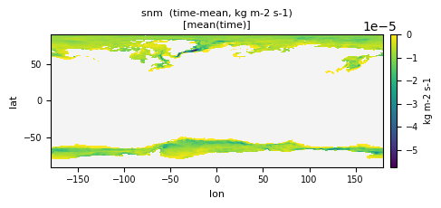
| Quantity | Expected | Observed |
|---|---|---|
| min | 0 | -2.955e-04 |
| mean | 1e-6 | -8.804e-06 |
| max | 1e-3 | -1.444e-31 |
Affected files (2)
- snm_tavg-u-hxy-lnd_day_glb_gn_AWI-ESM-3_picontrol_r1i1p1f1_15870101-15871231.nc
- snm_tavg-u-hxy-si_mon_glb_gn_AWI-ESM-3_picontrol_r1i1p1f1_158701-158712.nc
Change in Snow Water Equivalent
CF: change_over_time_in_amount_of_ice_and_snow_on_land
Change in Snow Water Equivalent
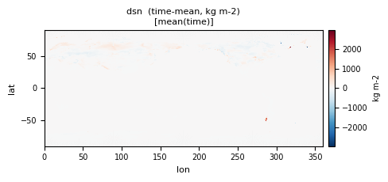
| Quantity | Expected | Observed |
|---|---|---|
| min | -2000 | -67566.8 |
| mean | ~0 | 0.994 |
| max | 2000 | 1.536e+05 |
Affected files (1)
- dsn_tavg-u-hxy-lnd_day_glb_gn_AWI-ESM-3_picontrol_r1i1p1f1_15870102-15871231.nc
Carbon Mass Flux into Atmosphere Due to CO2 Emission from Fire Excluding Land-Use Change [kgC m-2 s-1]
CF: surface_upward_mass_flux_of_carbon_dioxide_expressed_as_carbon_due_to_emission_from_fires_excluding_anthropogenic_land_use_change
CO2 emissions (expressed as a carbon mass flux) from natural fires + human ignition fires as calculated by the fire module of the DGVM, but excluding any CO2 flux from fire included in fLuc, defined below (CO2 Flux to Atmosphere from Land Use Change).
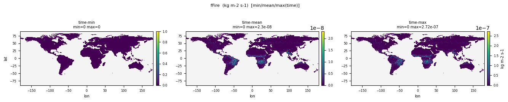
| Quantity | Expected | Observed |
|---|---|---|
| min | 0 | 0 |
| mean | ~5e-11 | 8.770e-10 |
| max | ~5e-8 | 1.806e-06 |
Affected files (2)
- fFire_tavg-u-hxy-lnd_mon_glb_gn_AWI-ESM-3_picontrol_r1i1p1f1_158601-158612.nc
- fFire_tavg-u-hxy-lnd_mon_glb_gn_AWI-ESM-3_picontrol_r1i1p1f1_158701-158712.nc
Carbon Mass Flux into Atmosphere Due to CO2 Emission from Fire Including All Sources [kgC m-2 s-1]
CF: surface_upward_mass_flux_of_carbon_dioxide_expressed_as_carbon_due_to_emission_from_fires
From all sources, Including natural, anthropogenic and Land-use change. Only total fire emissions can be compared to observations.
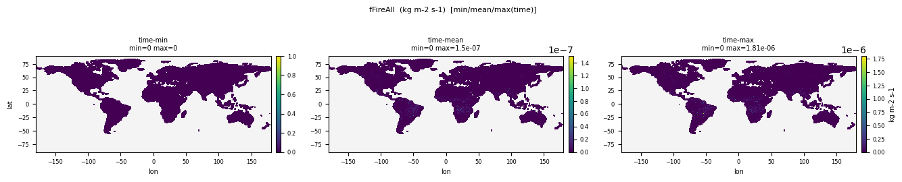
| Quantity | Expected | Observed |
|---|---|---|
| min | 0 | 0 |
| mean | ~5e-11 | 8.770e-10 |
| max | ~5e-8 | 1.806e-06 |
Affected files (2)
- fFireAll_tavg-u-hxy-lnd_mon_glb_gn_AWI-ESM-3_picontrol_r1i1p1f1_158601-158612.nc
- fFireAll_tavg-u-hxy-lnd_mon_glb_gn_AWI-ESM-3_picontrol_r1i1p1f1_158701-158712.nc
Carbon Mass Flux into Atmosphere Due to CO2 Emission from Natural Fire [kgC m-2 s-1]
CF: surface_upward_mass_flux_of_carbon_dioxide_expressed_as_carbon_due_to_emission_from_natural_fires
CO2 emissions from natural fires
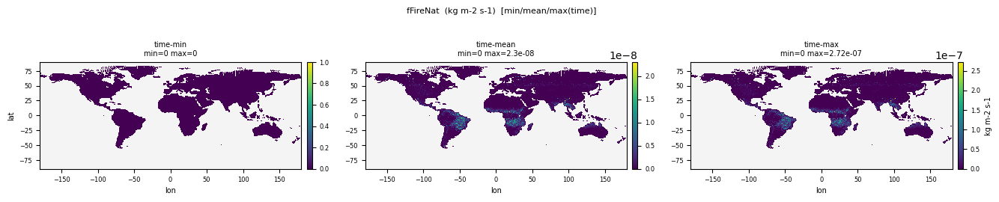
| Quantity | Expected | Observed |
|---|---|---|
| min | 0 | 0 |
| mean | ~5e-11 | 8.770e-10 |
| max | ~5e-8 | 1.806e-06 |
Affected files (2)
- fFireNat_tavg-u-hxy-lnd_mon_glb_gn_AWI-ESM-3_picontrol_r1i1p1f1_158601-158612.nc
- fFireNat_tavg-u-hxy-lnd_mon_glb_gn_AWI-ESM-3_picontrol_r1i1p1f1_158701-158712.nc
Total Carbon Mass Flux from Vegetation to Litter as a Result of Mortality
CF: mass_flux_of_carbon_into_litter_from_vegetation_due_to_mortality
needed to separate changing vegetation C turnover times resulting from changing allocation versus changing mortality
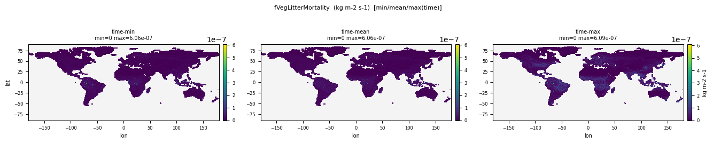
| Quantity | Expected | Observed |
|---|---|---|
| min | 0 | 0 |
| mean | ~5e-10 | 1.134e-08 |
| max | ~3e-8 | 6.094e-07 |
Affected files (2)
- fVegLitterMortality_tavg-u-hxy-lnd_mon_glb_gn_AWI-ESM-3_picontrol_r1i1p1f1_158601-158612.nc
- fVegLitterMortality_tavg-u-hxy-lnd_mon_glb_gn_AWI-ESM-3_picontrol_r1i1p1f1_158701-158712.nc
Total Runoff
CF: runoff_flux
the total runoff (including "drainage" through the base of the soil model) leaving the land portion of the grid cell divided by the land area in the grid cell, averaged over the 3-hour interval.
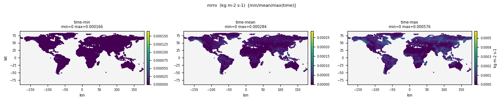
| Quantity | Expected | Observed |
|---|---|---|
| min | 0 | 0 |
| mean | ~1e-5 (30 mm/yr land avg) | 2.220e-06 |
| max | ~2e-4 | 0.004126 |
Affected files (4)
- mrro_tavg-u-hxy-lnd_3hr_glb_gn_AWI-ESM-3_picontrol_r1i1p1f1_158701010130-158712312230.nc
- mrro_tavg-u-hxy-lnd_day_glb_gn_AWI-ESM-3_picontrol_r1i1p1f1_15870101-15871231.nc
- mrro_tavg-u-hxy-lnd_mon_glb_gn_AWI-ESM-3_picontrol_r1i1p1f1_158601-158612.nc
- mrro_tavg-u-hxy-lnd_mon_glb_gn_AWI-ESM-3_picontrol_r1i1p1f1_158701-158712.nc
Subsurface Runoff
CF: subsurface_runoff_flux
subsurface_runoff_flux
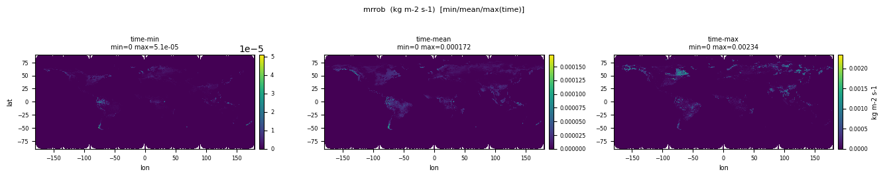
| Quantity | Expected | Observed |
|---|---|---|
| min | 0 | 0 |
| mean | ~1e-5 | 1.306e-06 |
| max | ~1e-4 | 0.002342 |
Affected files (1)
- mrrob_tavg-u-hxy-lnd_day_glb_gn_AWI-ESM-3_picontrol_r1i1p1f1_15870101-15871231.nc
Surface Runoff
CF: surface_runoff_flux
surface_runoff_flux
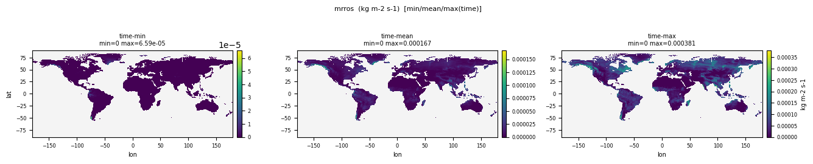
| Quantity | Expected | Observed |
|---|---|---|
| min | 0 | 0 |
| mean | ~5e-6 | 9.141e-07 |
| max | ~1e-4 | 0.009432 |
Affected files (3)
- mrros_tavg-u-hxy-lnd_3hr_glb_gn_AWI-ESM-3_picontrol_r1i1p1f1_158701010130-158712312230.nc
- mrros_tavg-u-hxy-lnd_mon_glb_gn_AWI-ESM-3_picontrol_r1i1p1f1_158601-158612.nc
- mrros_tavg-u-hxy-lnd_mon_glb_gn_AWI-ESM-3_picontrol_r1i1p1f1_158701-158712.nc
Net Carbon Mass Flux out of Atmosphere Due to Net Ecosystem Productivity on Land [kgC m-2 s-1]
CF: surface_net_downward_mass_flux_of_carbon_dioxide_expressed_as_carbon_due_to_all_land_processes_excluding_anthropogenic_land_use_change
Net Ecosystem Exchange
| Quantity | Expected | Observed |
|---|---|---|
| min | -5e-8 | -1.837e-06 |
| mean | ~0 | 8.150e-10 |
| max | 5e-8 | 9.249e-08 |
Affected files (2)
- nep_tavg-u-hxy-lnd_mon_glb_gn_AWI-ESM-3_picontrol_r1i1p1f1_158601-158612.nc
- nep_tavg-u-hxy-lnd_mon_glb_gn_AWI-ESM-3_picontrol_r1i1p1f1_158701-158712.nc
Carbon Mass Flux from Vegetation, Litter or Soil Pools into the Atmosphere Due to any Human Activity [kgC m-2 s-1]
CF: surface_upward_mass_flux_of_carbon_dioxide_expressed_as_carbon_due_to_anthropogenic_land_use_or_land_cover_change_excluding_forestry_and_agricultural_products
Anthropogenic flux of carbon as carbon dioxide into the atmosphere. That is, emissions influenced, caused, or created by human activity. Anthropogenic emission of carbon dioxide includes fossil fuel use, cement production, agricultural burning and sources associated with anthropogenic land use change, except forest regrowth.
| Quantity | Expected | Observed |
|---|---|---|
| min | 0 | 0 |
| mean | ~0 | 4.271e-10 |
| max | ~0 | 1.060e-08 |
Affected files (2)
- fAnthDisturb_tavg-u-hxy-lnd_mon_glb_gn_AWI-ESM-3_picontrol_r1i1p1f1_158601-158612.nc
- fAnthDisturb_tavg-u-hxy-lnd_mon_glb_gn_AWI-ESM-3_picontrol_r1i1p1f1_158701-158712.nc
Harvested Biomass That Goes Straight into Atmosphere as Carbon Mass Flux [kgC m-2 s-1]
CF: surface_upward_mass_flux_of_carbon_dioxide_expressed_as_carbon_due_to_emission_from_crop_harvesting
any harvested carbon that is assumed to decompose immediately into the atmosphere is reported here
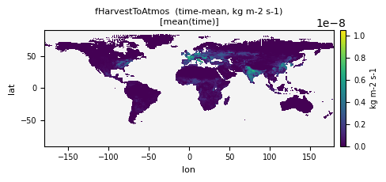
| Quantity | Expected | Observed |
|---|---|---|
| min | 0 | 0 |
| mean | ~0 | 4.271e-10 |
| max | ~0 | 1.060e-08 |
Affected files (2)
- fHarvestToAtmos_tavg-u-hxy-lnd_mon_glb_gn_AWI-ESM-3_picontrol_r1i1p1f1_158601-158612.nc
- fHarvestToAtmos_tavg-u-hxy-lnd_mon_glb_gn_AWI-ESM-3_picontrol_r1i1p1f1_158701-158712.nc
Nitrogen Mass Flux out of Land Due to any Human Activity
CF: tendency_of_atmosphere_mass_content_of_nitrogen_compounds_expressed_as_nitrogen_due_to_anthropogenic_emission
will require some careful definition to make sure we capture everything - any human activity that releases nitrogen from land instead of into product pool goes here. E.g. Deforestation fire, harvest assumed to decompose straight away, grazing...
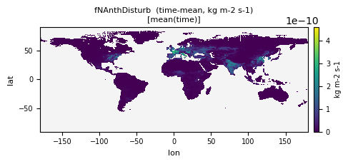
| Quantity | Expected | Observed |
|---|---|---|
| min | 0 | 0 |
| mean | ~0 | 1.463e-11 |
| max | ~0 | 4.580e-10 |
Affected files (2)
- fNAnthDisturb_tavg-u-hxy-lnd_mon_glb_gn_AWI-ESM-3_picontrol_r1i1p1f1_158601-158612.nc
- fNAnthDisturb_tavg-u-hxy-lnd_mon_glb_gn_AWI-ESM-3_picontrol_r1i1p1f1_158701-158712.nc
Total Nitrogen Added for Cropland Fertilisation (Artificial and Manure)
CF: tendency_of_soil_mass_content_of_nitrogen_compounds_expressed_as_nitrogen_due_to_fertilization
Total Nitrogen added for cropland fertilisation (artificial and manure). Relative to total land area of a grid cell, not relative to agricultural area
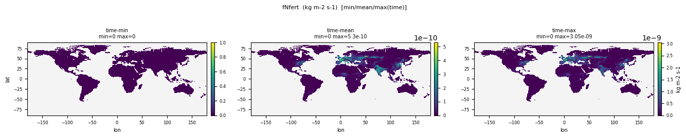
| Quantity | Expected | Observed |
|---|---|---|
| min | 0 | 0 |
| mean | ~0 | 2.256e-11 |
| max | ~0 | 3.136e-09 |
Affected files (2)
- fNfert_tavg-u-hxy-lnd_mon_glb_gn_AWI-ESM-3_picontrol_r1i1p1f1_158601-158612.nc
- fNfert_tavg-u-hxy-lnd_mon_glb_gn_AWI-ESM-3_picontrol_r1i1p1f1_158701-158712.nc
Snow Evaporation
CF: water_evapotranspiration_flux
The flux due to conversion of liquid or solid water into vapor at the surface where there is snow on land
| Quantity | Expected | Observed |
|---|---|---|
| min | 0 | -3.433e-05 |
| mean | ~1e-6 | 1.022e-07 |
| max | ~5e-5 | 8.860e-05 |
Affected files (1)
- esn_tavg-u-hxy-sn_day_glb_gn_AWI-ESM-3_picontrol_r1i1p1f1_15870101-15871231.nc
Net Nitrogen Release from Soil and Litter as the Outcome of Nitrogen Immobilisation and Gross Mineralisation
CF: mass_flux_of_nitrogen_compounds_expressed_as_nitrogen_out_of_litter_and_soil_due_to_immobilisation_and_remineralization
Loss of soil nitrogen through remineralization and immobilisation. Remineralization is the degradation of organic matter into inorganic forms of carbon, nitrogen, phosphorus and other micronutrients, which consumes oxygen and releases energy. Immobilisation of nitrogen refers to retention of nitrogen by micro-organisms under certain conditions, making it unavailable for plants.
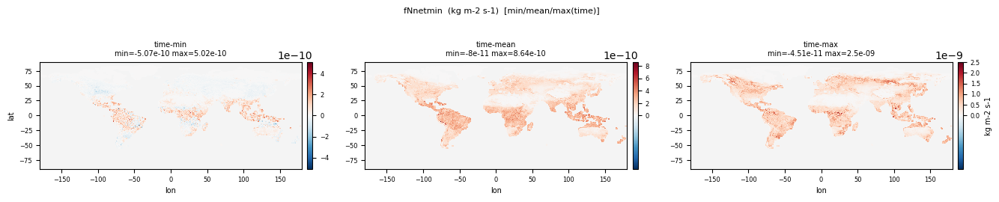
| Quantity | Expected | Observed |
|---|---|---|
| min | 0 | -5.067e-10 |
| mean | ~5e-12 | 1.437e-10 |
| max | ~3e-10 | 2.503e-09 |
Affected files (2)
- fNnetmin_tavg-u-hxy-lnd_mon_glb_gn_AWI-ESM-3_picontrol_r1i1p1f1_158601-158612.nc
- fNnetmin_tavg-u-hxy-lnd_mon_glb_gn_AWI-ESM-3_picontrol_r1i1p1f1_158701-158712.nc
Grid-Cell Area for River Model Variables
CF: cell_area
Cell areas for any grid used to report river model variables (may be the same as for atmospheric variables). These cell areas should be defined to enable exact calculation of area integrals (e.g., of vertical fluxes of energy at the surface and top of the atmosphere).
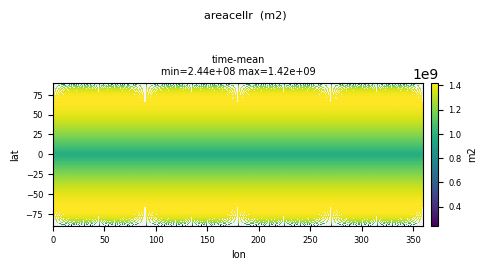
| Quantity | Expected | Observed |
|---|---|---|
| min | ~1e7 | 2.440e+08 |
| mean | ~5e10 | 1.211e+09 |
| max | ~6e10 | 1.419e+09 |
Affected files (1)
- areacellr_ti-u-hxy-u_fx_glb_gn_AWI-ESM-3_picontrol_r1i1p1f1.nc
Carbon Mass in Litter Pool
CF: litter_mass_content_of_carbon
"Litter" is dead plant material in or above the soil. It is distinct from coarse wood debris. The precise distinction between "fine" and "coarse" is model dependent. "Content" indicates a quantity per unit area. The sum of the quantities with standard names surface_litter_mass_content_of_carbon and subsurface_litter_mass_content_of_carbon has the standard name litter_mass_content_of_carbon.
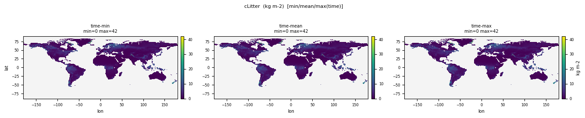
| Quantity | Expected | Observed |
|---|---|---|
| min | 0 | 0 |
| mean | ~2 | 2.211 |
| max | ~15 | 156.3 |
Affected files (2)
- cLitter_tavg-u-hxy-lnd_mon_glb_gn_AWI-ESM-3_picontrol_r1i1p1f1_158601-158612.nc
- cLitter_tavg-u-hxy-lnd_mon_glb_gn_AWI-ESM-3_picontrol_r1i1p1f1_158701-158712.nc
Carbon Mass in Coarse Woody Debris
CF: wood_debris_mass_content_of_carbon
"Content" indicates a quantity per unit area. "Wood debris" means dead organic matter composed of coarse wood. It is distinct from fine litter. The precise distinction between "fine" and "coarse" is model dependent.
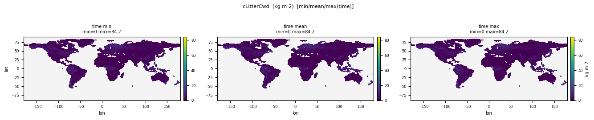
| Quantity | Expected | Observed |
|---|---|---|
| min | 0 | 0 |
| mean | ~1 | 1.722 |
| max | ~10 | 84.195 |
Affected files (2)
- cLitterCwd_tavg-u-hxy-lnd_mon_glb_gn_AWI-ESM-3_picontrol_r1i1p1f1_158601-158612.nc
- cLitterCwd_tavg-u-hxy-lnd_mon_glb_gn_AWI-ESM-3_picontrol_r1i1p1f1_158701-158712.nc
Carbon in Above and Below-Ground Litter Pools on Land-Use Tiles
CF: litter_mass_content_of_carbon
end of year values (not annual mean)
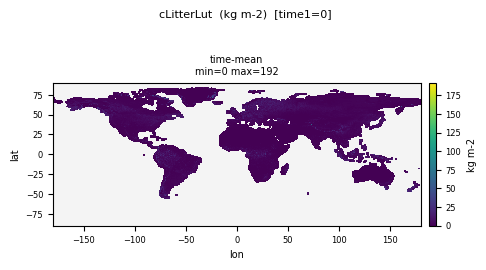
| Quantity | Expected | Observed |
|---|---|---|
| min | 0 | 0 |
| mean | ~2 | 2.295 |
| max | ~15 | 191.8 |
Affected files (1)
- cLitterLut_tpt-u-hxy-multi_yr_glb_gn_AWI-ESM-3_picontrol_r1i1p1f1_1586-1587.nc
Carbon Mass in Below-Ground Litter
CF: subsurface_litter_mass_content_of_carbon
subsurface litter pool fed by root inputs.
| Quantity | Expected | Observed |
|---|---|---|
| min | 0 | 0 |
| mean | ~1 | 0.2874 |
| max | ~8 | 58.247 |
Affected files (2)
- cLitterSubSurf_tavg-u-hxy-lnd_mon_glb_gn_AWI-ESM-3_picontrol_r1i1p1f1_158601-158612.nc
- cLitterSubSurf_tavg-u-hxy-lnd_mon_glb_gn_AWI-ESM-3_picontrol_r1i1p1f1_158701-158712.nc
Carbon Mass in Above-Ground Litter
CF: surface_litter_mass_content_of_carbon
Surface or near-surface litter pool fed by leaf and above-ground litterfall
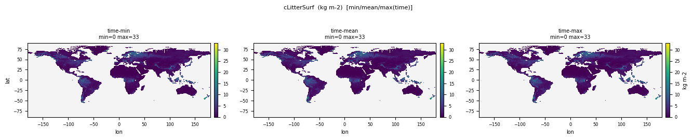
| Quantity | Expected | Observed |
|---|---|---|
| min | 0 | 0 |
| mean | ~1 | 1.924 |
| max | ~8 | 98.053 |
Affected files (2)
- cLitterSurf_tavg-u-hxy-lnd_mon_glb_gn_AWI-ESM-3_picontrol_r1i1p1f1_158601-158612.nc
- cLitterSurf_tavg-u-hxy-lnd_mon_glb_gn_AWI-ESM-3_picontrol_r1i1p1f1_158701-158712.nc
Carbon Mass in Vegetation
CF: vegetation_carbon_content
Carbon mass per unit area in vegetation.
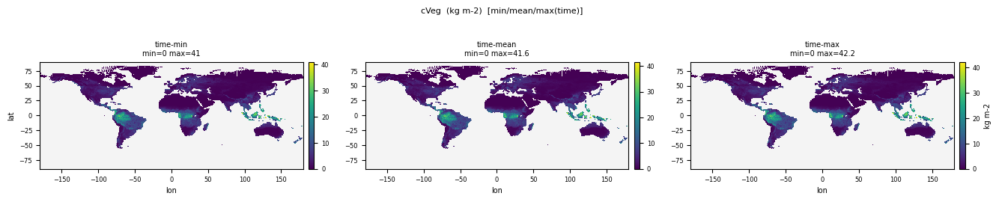
| Quantity | Expected | Observed |
|---|---|---|
| min | 0 | 0 |
| mean | ~5 | 0.126 |
| max | ~35 | 1.622 |
Affected files (8)
- cVeg_tavg-u-hxy-lnd_mon_glb_gn_AWI-ESM-3_picontrol_r1i1p1f1_158601-158612.nc
- cVeg_tavg-u-hxy-lnd_mon_glb_gn_AWI-ESM-3_picontrol_r1i1p1f1_158701-158712.nc
- cVeg_tavg-u-hxy-ng_mon_glb_gn_AWI-ESM-3_picontrol_r1i1p1f1_158601-158612.nc
- cVeg_tavg-u-hxy-ng_mon_glb_gn_AWI-ESM-3_picontrol_r1i1p1f1_158701-158712.nc
- cVeg_tavg-u-hxy-shb_mon_glb_gn_AWI-ESM-3_picontrol_r1i1p1f1_158601-158612.nc
- cVeg_tavg-u-hxy-shb_mon_glb_gn_AWI-ESM-3_picontrol_r1i1p1f1_158701-158712.nc
- cVeg_tavg-u-hxy-tree_mon_glb_gn_AWI-ESM-3_picontrol_r1i1p1f1_158601-158612.nc
- cVeg_tavg-u-hxy-tree_mon_glb_gn_AWI-ESM-3_picontrol_r1i1p1f1_158701-158712.nc
Total Nitrogen Lost to the Atmosphere (Including NHx, NOx, N2O, N2) from Fire
CF: surface_upward_mass_flux_of_nitrogen_compounds_expressed_as_nitrogen_due_to_emission_from_fires
Flux of Nitrogen from the land into the atmosphere due to fire
| Quantity | Expected | Observed |
|---|---|---|
| min | 0 | 0 |
| mean | ~1e-12 | 7.325e-12 |
| max | ~1e-9 | 8.380e-09 |
Affected files (2)
- fNgasFire_tavg-u-hxy-lnd_mon_glb_gn_AWI-ESM-3_picontrol_r1i1p1f1_158601-158612.nc
- fNgasFire_tavg-u-hxy-lnd_mon_glb_gn_AWI-ESM-3_picontrol_r1i1p1f1_158701-158712.nc
Total Nitrogen Loss to Leaching or Runoff (Sum of Ammonium, Nitrite and Nitrate)
CF: mass_flux_of_carbon_out_of_soil_due_to_leaching_and_runoff
In accordance with common usage in geophysical disciplines, "flux" implies per unit area, called "flux density" in physics. The specification of a physical process by the phrase "due_to_" process means that the quantity named is a single term in a sum of terms which together compose the general quantity named by omitting the phrase. "Leaching" means the loss of water soluble chemical species from soil. Runoff is the liquid water which drains from land. If not specified, "runoff" refers to the sum of surface runoff and subsurface drainage.
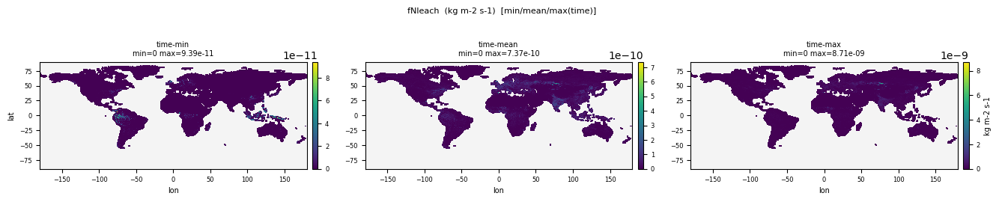
| Quantity | Expected | Observed |
|---|---|---|
| min | 0 | 0 |
| mean | ~1e-12 | 1.462e-11 |
| max | ~1e-9 | 8.709e-09 |
Affected files (2)
- fNleach_tavg-u-hxy-lnd_mon_glb_gn_AWI-ESM-3_picontrol_r1i1p1f1_158601-158612.nc
- fNleach_tavg-u-hxy-lnd_mon_glb_gn_AWI-ESM-3_picontrol_r1i1p1f1_158701-158712.nc
Total Land NOx Flux
CF: surface_upward_mass_flux_of_nox_expressed_as_nitrogen_out_of_vegetation_and_litter_and_soil
The surface called "surface" means the lower boundary of the atmosphere. "Upward" indicates a vector component which is positive when directed upward (negative downward). In accordance with common usage in geophysical disciplines, "flux" implies per unit area, called "flux density" in physics. The phrase "expressed_as" is used in the construction A_expressed_as_B, where B is a chemical constituent of A. It means that the quantity indicated by the standard name is calculated solely with respect to the B contained in A, neglecting all other chemical constituents of A. "Nox" means a combination of two radical species containing nitrogen and oxygen NO+NO2. "Vegetation" means any living plants e.g. trees, shrubs, grass. "Litter" is dead plant material in or above the soil.
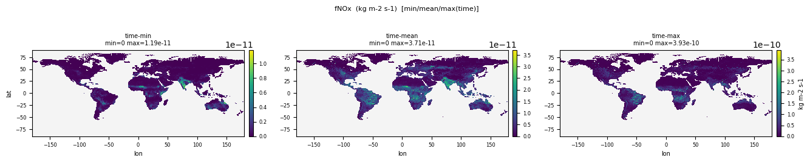
| Quantity | Expected | Observed |
|---|---|---|
| min | 0 | 0 |
| mean | ~3e-13 | 5.080e-12 |
| max | ~3e-10 | 1.987e-09 |
Affected files (2)
- fNOx_tavg-u-hxy-lnd_mon_glb_gn_AWI-ESM-3_picontrol_r1i1p1f1_158601-158612.nc
- fNOx_tavg-u-hxy-lnd_mon_glb_gn_AWI-ESM-3_picontrol_r1i1p1f1_158701-158712.nc
Total Carbon Mass Flux from Vegetation to Litter
CF: mass_flux_of_carbon_into_litter_from_vegetation
In accordance with common usage in geophysical disciplines, "flux" implies per unit area, called "flux density" in physics. "Vegetation" means any living plants e.g. trees, shrubs, grass. "Litter" is dead plant material in or above the soil. It is distinct from coarse wood debris. The precise distinction between "fine" and "coarse" is model dependent. The sum of the quantities with standard names mass_flux_of_carbon_into_litter_from_vegetation_due_to_mortality and mass_flux_of_carbon_into_litter_from_vegetation_due_to_senescence is mass_flux_of_carbon_into_litter_from_vegetation.
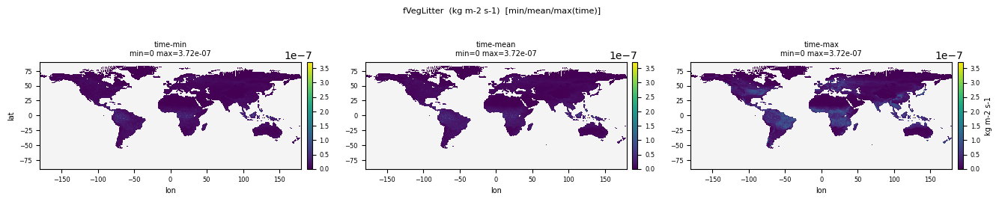
| Quantity | Expected | Observed |
|---|---|---|
| min | 0 | 0 |
| mean | ~2e-9 | 1.134e-08 |
| max | ~5e-8 | 6.094e-07 |
Affected files (2)
- fVegLitter_tavg-u-hxy-lnd_mon_glb_gn_AWI-ESM-3_picontrol_r1i1p1f1_158601-158612.nc
- fVegLitter_tavg-u-hxy-lnd_mon_glb_gn_AWI-ESM-3_picontrol_r1i1p1f1_158701-158712.nc
Total Carbon Mass Flux from Vegetation to Litter as a Result of Leaf, Branch, and Root Senescence
CF: mass_flux_of_carbon_into_litter_from_vegetation_due_to_senescence
needed to separate changing vegetation C turnover times resulting from changing allocation versus changing mortality
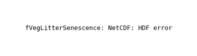
| Quantity | Expected | Observed |
|---|---|---|
| min | 0 | 0 |
| mean | ~1.5e-9 | 1.120e-14 |
| max | ~5e-8 | 7.900e-09 |
Affected files (2)
- fVegLitterSenescence_tavg-u-hxy-lnd_mon_glb_gn_AWI-ESM-3_picontrol_r1i1p1f1_158601-158612.nc
- fVegLitterSenescence_tavg-u-hxy-lnd_mon_glb_gn_AWI-ESM-3_picontrol_r1i1p1f1_158701-158712.nc
Ground heat flux at 3hr
CF: surface_downward_heat_flux_in_air
Ground heat flux at 3hr
| Quantity | Expected | Observed |
|---|---|---|
| min | -300 | -2449.4 |
| mean | ~0 | 2.256 |
| max | 300 | 2255.7 |
Affected files (1)
- hfdsl_tavg-u-hxy-lnd_3hr_glb_gn_AWI-ESM-3_picontrol_r1i1p1f1_158701010130-158712312230.nc
Carbon Mass Flux out of Atmosphere Due to Net Biospheric Production on Land [kgC m-2 s-1]
CF: surface_net_downward_mass_flux_of_carbon_dioxide_expressed_as_carbon_due_to_all_land_processes
This is the net mass flux of carbon between land and atmosphere calculated as photosynthesis MINUS the sum of plant and soil respiration, carbonfluxes from fire, harvest, grazing and land use change. Positive flux is into the land.
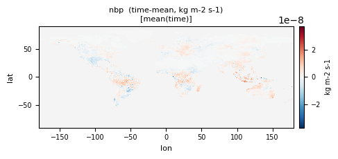
| Quantity | Expected | Observed |
|---|---|---|
| min | -1e-7 | -1.838e-06 |
| mean | ~0 (piControl balanced) | 4.079e-10 |
| max | 1e-7 | 9.199e-08 |
Affected files (2)
- nbp_tavg-u-hxy-lnd_mon_glb_gn_AWI-ESM-3_picontrol_r1i1p1f1_158601-158612.nc
- nbp_tavg-u-hxy-lnd_mon_glb_gn_AWI-ESM-3_picontrol_r1i1p1f1_158701-158712.nc
Net Carbon Mass Flux into Land-Use Tile [kgC m-2 s-1]
CF: surface_net_downward_mass_flux_of_carbon_dioxide_expressed_as_carbon_due_to_all_land_processes
Computed as npp minus heterotrophic respiration minus fire minus C leaching minus harvesting/clearing. Positive rate is into the land, negative rate is from the land. Do not include fluxes from anthropogenic product pools to atmosphere
| Quantity | Expected | Observed |
|---|---|---|
| min | -1e-7 | -1.899e-06 |
| mean | ~0 | 4.648e-10 |
| max | 1e-7 | 1.011e-07 |
Affected files (2)
- nbpLut_tavg-u-hxy-multi_mon_glb_gn_AWI-ESM-3_picontrol_r1i1p1f1_158601-158612.nc
- nbpLut_tavg-u-hxy-multi_mon_glb_gn_AWI-ESM-3_picontrol_r1i1p1f1_158701-158712.nc
Net Primary Production on Land as Carbon Mass Flux [kgC m-2 s-1]
CF: net_primary_productivity_of_biomass_expressed_as_carbon
"Production of carbon" means the production of biomass expressed as the mass of carbon which it contains. Net primary production is the excess of gross primary production (rate of synthesis of biomass from inorganic precursors) by autotrophs ("producers"), for example, photosynthesis in plants or phytoplankton, over the rate at which the autotrophs themselves respire some of this biomass. "Productivity" means production per unit area. The phrase "expressed_as" is used in the construction A_expressed_as_B, where B is a chemical constituent of A. It means that the quantity indicated by the standard name is calculated solely with respect to the B contained in A, neglecting all other chemical constituents of A.
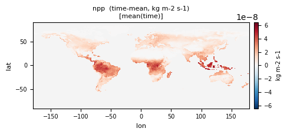
| Quantity | Expected | Observed |
|---|---|---|
| min | 0 | -7.976e-09 |
| mean | ~1.9e-8 (~60 PgC/yr/land) | 1.424e-10 |
| max | ~5e-7 | 4.007e-08 |
Affected files (8)
- npp_tavg-u-hxy-lnd_mon_glb_gn_AWI-ESM-3_picontrol_r1i1p1f1_158601-158612.nc
- npp_tavg-u-hxy-lnd_mon_glb_gn_AWI-ESM-3_picontrol_r1i1p1f1_158701-158712.nc
- npp_tavg-u-hxy-ng_mon_glb_gn_AWI-ESM-3_picontrol_r1i1p1f1_158601-158612.nc
- npp_tavg-u-hxy-ng_mon_glb_gn_AWI-ESM-3_picontrol_r1i1p1f1_158701-158712.nc
- npp_tavg-u-hxy-shb_mon_glb_gn_AWI-ESM-3_picontrol_r1i1p1f1_158601-158612.nc
- npp_tavg-u-hxy-shb_mon_glb_gn_AWI-ESM-3_picontrol_r1i1p1f1_158701-158712.nc
- npp_tavg-u-hxy-tree_mon_glb_gn_AWI-ESM-3_picontrol_r1i1p1f1_158601-158612.nc
- npp_tavg-u-hxy-tree_mon_glb_gn_AWI-ESM-3_picontrol_r1i1p1f1_158701-158712.nc
Nitrogen Mass in Vegetation
CF: vegetation_mass_content_of_nitrogen
Report missing data over ocean grid cells. For fractional land report value averaged over the land fraction.
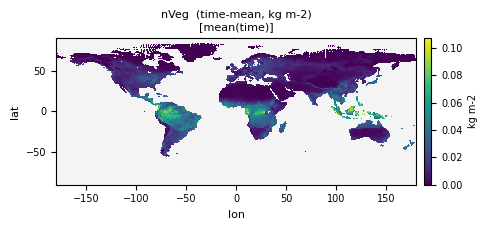
| Quantity | Expected | Observed |
|---|---|---|
| min | 0 | 0 |
| mean | ~0.1 | 0.01848 |
| max | ~2 | 0.1568 |
Affected files (2)
- nVeg_tavg-u-hxy-lnd_mon_glb_gn_AWI-ESM-3_picontrol_r1i1p1f1_158601-158612.nc
- nVeg_tavg-u-hxy-lnd_mon_glb_gn_AWI-ESM-3_picontrol_r1i1p1f1_158701-158712.nc
Carbon Mass Flux into Atmosphere Due to Autotrophic (Plant) Respiration on Land [kgC m-2 s-1]
CF: surface_upward_mass_flux_of_carbon_dioxide_expressed_as_carbon_due_to_plant_respiration
Carbon mass flux per unit area into atmosphere due to autotrophic respiration on land (respiration by producers) [see rh for heterotrophic production]
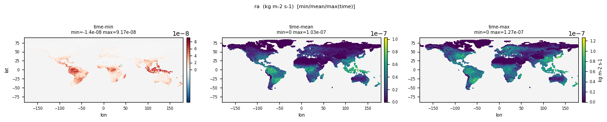
| Quantity | Expected | Observed |
|---|---|---|
| min | 0 | 0 |
| mean | ~2e-8 | 2.549e-10 |
| max | ~5e-7 | 3.983e-08 |
Affected files (8)
- ra_tavg-u-hxy-lnd_mon_glb_gn_AWI-ESM-3_picontrol_r1i1p1f1_158601-158612.nc
- ra_tavg-u-hxy-lnd_mon_glb_gn_AWI-ESM-3_picontrol_r1i1p1f1_158701-158712.nc
- ra_tavg-u-hxy-ng_mon_glb_gn_AWI-ESM-3_picontrol_r1i1p1f1_158601-158612.nc
- ra_tavg-u-hxy-ng_mon_glb_gn_AWI-ESM-3_picontrol_r1i1p1f1_158701-158712.nc
- ra_tavg-u-hxy-shb_mon_glb_gn_AWI-ESM-3_picontrol_r1i1p1f1_158601-158612.nc
- ra_tavg-u-hxy-shb_mon_glb_gn_AWI-ESM-3_picontrol_r1i1p1f1_158701-158712.nc
- ra_tavg-u-hxy-tree_mon_glb_gn_AWI-ESM-3_picontrol_r1i1p1f1_158601-158612.nc
- ra_tavg-u-hxy-tree_mon_glb_gn_AWI-ESM-3_picontrol_r1i1p1f1_158701-158712.nc
Total Heterotrophic Respiration on Land as Carbon Mass Flux [kgC m-2 s-1]
CF: surface_upward_mass_flux_of_carbon_dioxide_expressed_as_carbon_due_to_heterotrophic_respiration
Carbon mass flux per unit area into atmosphere due to heterotrophic respiration on land (respiration by consumers)
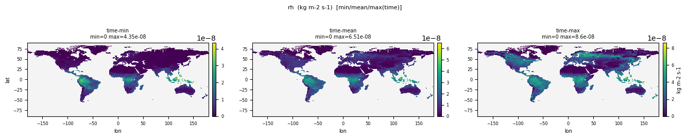
| Quantity | Expected | Observed |
|---|---|---|
| min | 0 | -1.800e-11 |
| mean | ~1.8e-8 (~55 PgC/yr) | 1.743e-10 |
| max | ~3e-7 | 2.653e-08 |
Affected files (8)
- rh_tavg-u-hxy-lnd_mon_glb_gn_AWI-ESM-3_picontrol_r1i1p1f1_158601-158612.nc
- rh_tavg-u-hxy-lnd_mon_glb_gn_AWI-ESM-3_picontrol_r1i1p1f1_158701-158712.nc
- rh_tavg-u-hxy-ng_mon_glb_gn_AWI-ESM-3_picontrol_r1i1p1f1_158601-158612.nc
- rh_tavg-u-hxy-ng_mon_glb_gn_AWI-ESM-3_picontrol_r1i1p1f1_158701-158712.nc
- rh_tavg-u-hxy-shb_mon_glb_gn_AWI-ESM-3_picontrol_r1i1p1f1_158601-158612.nc
- rh_tavg-u-hxy-shb_mon_glb_gn_AWI-ESM-3_picontrol_r1i1p1f1_158701-158712.nc
- rh_tavg-u-hxy-tree_mon_glb_gn_AWI-ESM-3_picontrol_r1i1p1f1_158601-158612.nc
- rh_tavg-u-hxy-tree_mon_glb_gn_AWI-ESM-3_picontrol_r1i1p1f1_158701-158712.nc
Snow Depth
CF: surface_snow_thickness
where land over land, this is computed as the mean thickness of snow in the land portion of the grid cell (averaging over the entire land portion, including the snow-free fraction). Reported as 0.0 where the land fraction is 0.
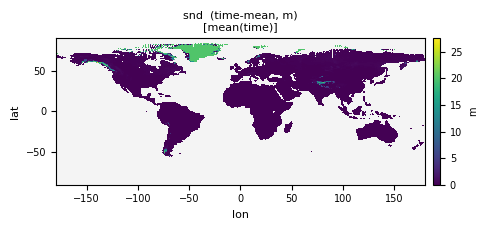
| Quantity | Expected | Observed |
|---|---|---|
| min | 0 | 9.317e-20 |
| mean | 0.05 | 0.1727 |
| max | 10 | 97.011 |
Affected files (5)
- snd_tavg-u-hxy-lnd_day_glb_gn_AWI-ESM-3_picontrol_r1i1p1f1_15870101-15871231.nc
- snd_tavg-u-hxy-lnd_mon_glb_gn_AWI-ESM-3_picontrol_r1i1p1f1_158601-158612.nc
- snd_tavg-u-hxy-lnd_mon_glb_gn_AWI-ESM-3_picontrol_r1i1p1f1_158701-158712.nc
- snd_tavg-u-hxy-sn_day_glb_gn_AWI-ESM-3_picontrol_r1i1p1f1_15870101-15871231.nc
- snd_tavg-u-hxy-sn_mon_glb_gn_AWI-ESM-3_picontrol_r1i1p1f1_158701-158712.nc
Needleleaf Deciduous Tree Area Percentage
CF: area_fraction
This is the percentage of the entire grid cell that is covered by needleleaf deciduous trees.
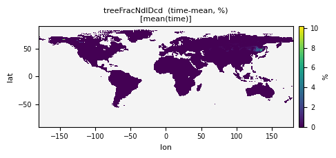
| Quantity | Expected | Observed |
|---|---|---|
| min | 0 | 0 |
| mean | ~3 | 0.01865 |
| max | 100 | 41.283 |
Affected files (2)
- treeFracNdlDcd_tavg-u-hxy-u_mon_glb_gn_AWI-ESM-3_picontrol_r1i1p1f1_158601-158612.nc
- treeFracNdlDcd_tavg-u-hxy-u_mon_glb_gn_AWI-ESM-3_picontrol_r1i1p1f1_158701-158712.nc
Height of Grass
CF: canopy_height
Vegetation height averaged over the grass fraction of a grid cell.
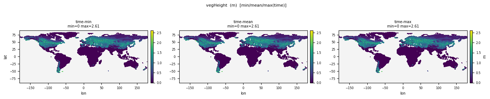
| Quantity | Expected | Observed |
|---|---|---|
| min | 0 | 0 |
| mean | ~5 | 0.3469 |
| max | ~50 | 2.614 |
Affected files (6)
- vegHeight_tavg-u-hxy-shb_mon_glb_gn_AWI-ESM-3_picontrol_r1i1p1f1_158601-158612.nc
- vegHeight_tavg-u-hxy-shb_mon_glb_gn_AWI-ESM-3_picontrol_r1i1p1f1_158701-158712.nc
- vegHeight_tavg-u-hxy-tree_mon_glb_gn_AWI-ESM-3_picontrol_r1i1p1f1_158601-158612.nc
- vegHeight_tavg-u-hxy-tree_mon_glb_gn_AWI-ESM-3_picontrol_r1i1p1f1_158701-158712.nc
- vegHeight_tavg-u-hxy-veg_mon_glb_gn_AWI-ESM-3_picontrol_r1i1p1f1_158601-158612.nc
- vegHeight_tavg-u-hxy-veg_mon_glb_gn_AWI-ESM-3_picontrol_r1i1p1f1_158701-158712.nc
WARN
Bare Soil Percentage Area Coverage
CF: area_fraction
Percentage of entire grid cell that is covered by bare soil.
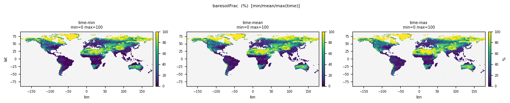
| Quantity | Expected | Observed |
|---|---|---|
| min | 0 | 0 |
| mean | ~10 | 58.633 |
| max | 100 | 100.0 |
Affected files (3)
- baresoilFrac_tavg-u-hxy-u_mon_glb_gn_AWI-ESM-3_picontrol_r1i1p1f1_158601-158612.nc
- baresoilFrac_tavg-u-hxy-u_mon_glb_gn_AWI-ESM-3_picontrol_r1i1p1f1_158701-158712.nc
- baresoilFrac_tavg-u-hxy-u_yr_glb_gn_AWI-ESM-3_picontrol_r1i1p1f1_1586-1587.nc
Percentage of Entire Grid Cell That Is Covered by Burnt Vegetation (All Classes)
CF: area_fraction
Percentage of grid cell burned due to all fires including natural and anthropogenic fires and those associated with anthropogenic land use change
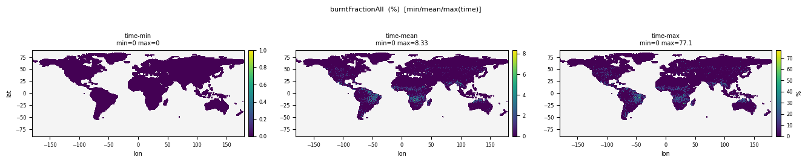
| Quantity | Expected | Observed |
|---|---|---|
| min | 0 | 0 |
| mean | ~1 | 0.2589 |
| max | ~30 | 77.078 |
Affected files (2)
- burntFractionAll_tavg-u-hxy-u_mon_glb_gn_AWI-ESM-3_picontrol_r1i1p1f1_158601-158612.nc
- burntFractionAll_tavg-u-hxy-u_mon_glb_gn_AWI-ESM-3_picontrol_r1i1p1f1_158701-158712.nc
Total Carbon in All Terrestrial Carbon Pools
CF: mass_content_of_carbon_in_vegetation_and_litter_and_soil_and_forestry_and_agricultural_products
Report missing data over ocean grid cells. For fractional land report value averaged over the land fraction.
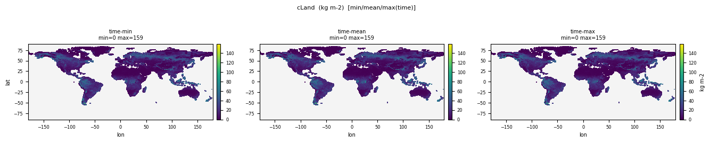
| Quantity | Expected | Observed |
|---|---|---|
| min | 0 | 0 |
| mean | ~25 | 15.287 |
| max | ~80 | 159.3 |
Affected files (2)
- cLand_tavg-u-hxy-lnd_mon_glb_gn_AWI-ESM-3_picontrol_r1i1p1f1_158601-158612.nc
- cLand_tavg-u-hxy-lnd_mon_glb_gn_AWI-ESM-3_picontrol_r1i1p1f1_158701-158712.nc
Carbon Mass in Roots
CF: root_mass_content_of_carbon
including fine and coarse roots.
| Quantity | Expected | Observed |
|---|---|---|
| min | 0 | 0 |
| mean | ~1 | 0.1727 |
| max | ~10 | 1.255 |
Affected files (2)
- cRoot_tavg-u-hxy-lnd_mon_glb_gn_AWI-ESM-3_picontrol_r1i1p1f1_158601-158612.nc
- cRoot_tavg-u-hxy-lnd_mon_glb_gn_AWI-ESM-3_picontrol_r1i1p1f1_158701-158712.nc
Percentage Cover by C3 Crops
CF: area_fraction
Percentage of entire grid cell covered by C3 crops
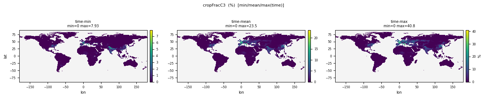
| Quantity | Expected | Observed |
|---|---|---|
| min | 0 | 0 |
| mean | ~4 | 0.5769 |
| max | 100 | 41.391 |
Affected files (2)
- cropFracC3_tavg-u-hxy-u_mon_glb_gn_AWI-ESM-3_picontrol_r1i1p1f1_158601-158612.nc
- cropFracC3_tavg-u-hxy-u_mon_glb_gn_AWI-ESM-3_picontrol_r1i1p1f1_158701-158712.nc
Carbon Mass in Soil Pool Above 1m Depth
CF: carbon_mass_content_of_soil_layer
Report missing data over ocean grid cells. For fractional land report value averaged over the land fraction.
| Quantity | Expected | Observed |
|---|---|---|
| min | 0 | 0 |
| mean | ~15 | 8.774 |
| max | ~100 | 139.2 |
Affected files (2)
- cSoil_tavg-u-hxy-lnd_mon_glb_gn_AWI-ESM-3_picontrol_r1i1p1f1_158601-158612.nc
- cSoil_tavg-u-hxy-lnd_mon_glb_gn_AWI-ESM-3_picontrol_r1i1p1f1_158701-158712.nc
Carbon in Soil Pool on Land-Use Tiles
CF: soil_mass_content_of_carbon
end of year values (not annual mean)
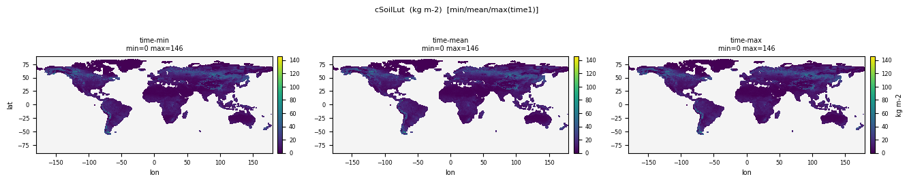
| Quantity | Expected | Observed |
|---|---|---|
| min | 0 | 0 |
| mean | ~15 | 10.066 |
| max | ~100 | 146.0 |
Affected files (1)
- cSoilLut_tpt-u-hxy-multi_yr_glb_gn_AWI-ESM-3_picontrol_r1i1p1f1_1586-1587.nc
Carbon Mass in Each Model Soil Pool (Summed over Vertical Levels)
CF: soil_mass_content_of_carbon
For models with multiple soil carbon pools, report each pool here. If models also have vertical discretisation these should be aggregated
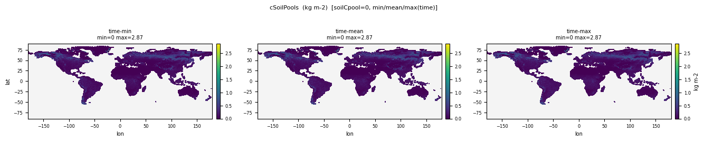
| Quantity | Expected | Observed |
|---|---|---|
| min | 0 | 0 |
| mean | ~5 | 2.925 |
| max | ~50 | 115.5 |
Affected files (2)
- cSoilPools_tavg-u-hxy-lnd_mon_glb_gn_AWI-ESM-3_picontrol_r1i1p1f1_158601-158612.nc
- cSoilPools_tavg-u-hxy-lnd_mon_glb_gn_AWI-ESM-3_picontrol_r1i1p1f1_158701-158712.nc
Carbon Mass in Stem
CF: stem_mass_content_of_carbon
including sapwood and hardwood.
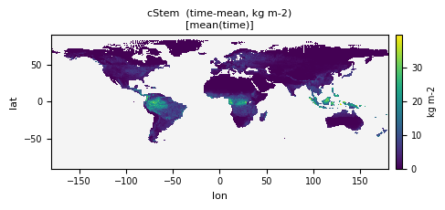
| Quantity | Expected | Observed |
|---|---|---|
| min | 0 | 0 |
| mean | ~3 | 3.738 |
| max | ~25 | 64.431 |
Affected files (2)
- cStem_tavg-u-hxy-lnd_mon_glb_gn_AWI-ESM-3_picontrol_r1i1p1f1_158601-158612.nc
- cStem_tavg-u-hxy-lnd_mon_glb_gn_AWI-ESM-3_picontrol_r1i1p1f1_158701-158712.nc
Carbon in Vegetation on Land-Use Tiles
CF: vegetation_carbon_content
end of year values (not annual mean)
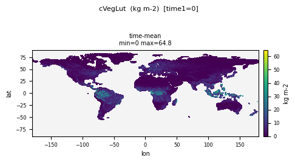
| Quantity | Expected | Observed |
|---|---|---|
| min | 0 | 0 |
| mean | ~5 | 4.565 |
| max | ~35 | 65.418 |
Affected files (1)
- cVegLut_tpt-u-hxy-multi_yr_glb_gn_AWI-ESM-3_picontrol_r1i1p1f1_1586-1587.nc
Change in Groundwater
CF: change_over_time_in_groundwater_amount
change_over_time_in_groundwater
| Quantity | Expected | Observed |
|---|---|---|
| min | -50 | -15.474 |
| mean | ~0 | 7.587e-04 |
| max | 50 | 102.4 |
Affected files (1)
- dgw_tavg-u-hxy-lnd_day_glb_gn_AWI-ESM-3_picontrol_r1i1p1f1_15870102-15871231.nc
Change in Soil Moisture
CF: change_over_time_in_mass_content_of_water_in_soil
Change in Soil Moisture
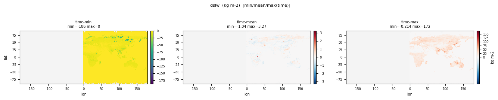
| Quantity | Expected | Observed |
|---|---|---|
| min | -100 | -186.5 |
| mean | ~0 | 0.002356 |
| max | 100 | 171.7 |
Affected files (1)
- dslw_tavg-u-hxy-lnd_day_glb_gn_AWI-ESM-3_picontrol_r1i1p1f1_15870102-15871231.nc
Water evaporation from soil
CF: water_evaporation_flux_from_soil
Water evaporation from soil
| Quantity | Expected | Observed |
|---|---|---|
| min | 0 | 0 |
| mean | ~1e-5 | 1.679e-06 |
| max | ~1e-4 | 5.684e-05 |
Affected files (2)
- evspsblsoi_tavg-u-hxy-lnd_mon_glb_gn_AWI-ESM-3_picontrol_r1i1p1f1_158601-158612.nc
- evspsblsoi_tavg-u-hxy-lnd_mon_glb_gn_AWI-ESM-3_picontrol_r1i1p1f1_158701-158712.nc
Evaporation from canopy
CF: water_evaporation_flux_from_canopy
Evaporation from canopy
| Quantity | Expected | Observed |
|---|---|---|
| min | 0 | 0 |
| mean | ~1e-5 | 1.545e-06 |
| max | ~1.5e-4 | 5.362e-05 |
Affected files (2)
- evspsblveg_tavg-u-hxy-lnd_mon_glb_gn_AWI-ESM-3_picontrol_r1i1p1f1_158601-158612.nc
- evspsblveg_tavg-u-hxy-lnd_mon_glb_gn_AWI-ESM-3_picontrol_r1i1p1f1_158701-158712.nc
Biological Nitrogen Fixation
CF: tendency_of_soil_and_vegetation_mass_content_of_nitrogen_compounds_expressed_as_nitrogen_due_to_fixation
The fixation (uptake of nitrogen gas directly from the atmosphere) of nitrogen due to biological processes.
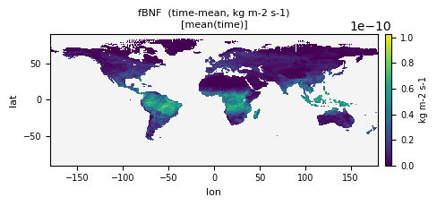
| Quantity | Expected | Observed |
|---|---|---|
| min | 0 | 0 |
| mean | ~3e-12 | 1.873e-11 |
| max | ~3e-10 | 1.963e-10 |
Affected files (2)
- fBNF_tavg-u-hxy-lnd_mon_glb_gn_AWI-ESM-3_picontrol_r1i1p1f1_158601-158612.nc
- fBNF_tavg-u-hxy-lnd_mon_glb_gn_AWI-ESM-3_picontrol_r1i1p1f1_158701-158712.nc
Lateral Transfer of Carbon out of Grid Cell That Eventually Goes into Ocean
CF: mass_flux_of_carbon_into_sea_water_from_rivers
leached carbon etc that goes into run off or river routing and finds its way into ocean should be reported here.
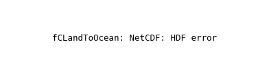
| Quantity | Expected | Observed |
|---|---|---|
| min | 0 | 0 |
| mean | ~1e-11 | 4.410e-11 |
| max | ~1e-9 | 2.016e-09 |
Affected files (2)
- fCLandToOcean_tavg-u-hxy-lnd_mon_glb_gn_AWI-ESM-3_picontrol_r1i1p1f1_158601-158612.nc
- fCLandToOcean_tavg-u-hxy-lnd_mon_glb_gn_AWI-ESM-3_picontrol_r1i1p1f1_158701-158712.nc
Total Land N2O Flux
CF: surface_upward_mass_flux_of_nitrous_oxide_expressed_as_nitrogen_out_of_vegetation_and_litter_and_soil
Surface upward flux of nitrous oxide (N2O) from vegetation (any living plants e.g. trees, shrubs, grass), litter (dead plant material in or above the soil), soil.
| Quantity | Expected | Observed |
|---|---|---|
| min | 0 | 0 |
| mean | ~5e-13 | 3.226e-12 |
| max | ~3e-10 | 1.293e-09 |
Affected files (2)
- fN2O_tavg-u-hxy-lnd_mon_glb_gn_AWI-ESM-3_picontrol_r1i1p1f1_158601-158612.nc
- fN2O_tavg-u-hxy-lnd_mon_glb_gn_AWI-ESM-3_picontrol_r1i1p1f1_158701-158712.nc
Dry and Wet Deposition of Reactive Nitrogen onto Land
CF: minus_tendency_of_atmosphere_mass_content_of_nitrogen_compounds_expressed_as_nitrogen_due_to_deposition
Surface deposition rate of nitrogen.
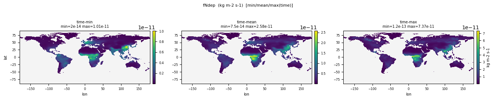
| Quantity | Expected | Observed |
|---|---|---|
| min | 0 | 2.000e-14 |
| mean | ~3e-13 | 3.898e-12 |
| max | ~5e-11 | 7.368e-11 |
Affected files (2)
- fNdep_tavg-u-hxy-lnd_mon_glb_gn_AWI-ESM-3_picontrol_r1i1p1f1_158601-158612.nc
- fNdep_tavg-u-hxy-lnd_mon_glb_gn_AWI-ESM-3_picontrol_r1i1p1f1_158701-158712.nc
Total Nitrogen Lost to the Atmosphere (Sum of NHx, NOx, N2O, N2)
CF: surface_upward_mass_flux_of_nitrogen_compounds_expressed_as_nitrogen
Total flux of Nitrogen from the land into the atmosphere.
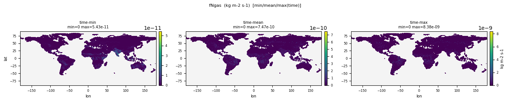
| Quantity | Expected | Observed |
|---|---|---|
| min | 0 | 0 |
| mean | ~3e-12 | 1.378e-11 |
| max | ~3e-9 | 8.381e-09 |
Affected files (2)
- fNgas_tavg-u-hxy-lnd_mon_glb_gn_AWI-ESM-3_picontrol_r1i1p1f1_158601-158612.nc
- fNgas_tavg-u-hxy-lnd_mon_glb_gn_AWI-ESM-3_picontrol_r1i1p1f1_158701-158712.nc
Lateral Transfer of Nitrogen out of Grid Cell That Eventually Goes into Ocean
CF: mass_flux_of_nitrogen_compounds_expressed_as_nitrogen_into_sea_from_rivers
leached nitrogen etc that goes into run off or river routing and finds its way into ocean should be reported here.
| Quantity | Expected | Observed |
|---|---|---|
| min | 0 | 0 |
| mean | ~1e-12 | 1.462e-11 |
| max | ~1e-8 | 8.709e-09 |
Affected files (2)
- fNLandToOcean_tavg-u-hxy-lnd_mon_glb_gn_AWI-ESM-3_picontrol_r1i1p1f1_158601-158612.nc
- fNLandToOcean_tavg-u-hxy-lnd_mon_glb_gn_AWI-ESM-3_picontrol_r1i1p1f1_158701-158712.nc
Total Nitrogen Mass Flux from Litter to Soil
CF: nitrogen_mass_flux_into_soil_from_litter
In accordance with common usage in geophysical disciplines, "flux" implies per unit area, called "flux density" in physics. "Litter" is dead plant material in or above the soil.
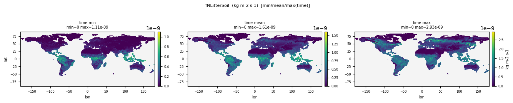
| Quantity | Expected | Observed |
|---|---|---|
| min | 0 | 0 |
| mean | ~3e-11 | 3.272e-10 |
| max | ~1e-8 | 2.933e-09 |
Affected files (2)
- fNLitterSoil_tavg-u-hxy-lnd_mon_glb_gn_AWI-ESM-3_picontrol_r1i1p1f1_158601-158612.nc
- fNLitterSoil_tavg-u-hxy-lnd_mon_glb_gn_AWI-ESM-3_picontrol_r1i1p1f1_158701-158712.nc
Total Nitrogen Lost (Including NHx, NOx, N2O, N2 and Leaching)
CF: surface_upward_mass_flux_of_nitrogen_compounds_expressed_as_nitrogen_out_of_vegetation_and_litter_and_soil
Not all models split losses into gaseous and leaching
| Quantity | Expected | Observed |
|---|---|---|
| min | 0 | -6.200e-13 |
| mean | ~5e-12 | 4.182e-11 |
| max | ~5e-9 | 8.780e-09 |
Affected files (2)
- fNloss_tavg-u-hxy-lnd_mon_glb_gn_AWI-ESM-3_picontrol_r1i1p1f1_158601-158612.nc
- fNloss_tavg-u-hxy-lnd_mon_glb_gn_AWI-ESM-3_picontrol_r1i1p1f1_158701-158712.nc
Total Plant Nitrogen Uptake (Sum of Ammonium and Nitrate) Irrespective of the Source of Nitrogen
CF: tendency_of_vegetation_mass_content_of_nitrogen_compounds_expressed_as_nitrogen_due_to_fixation
The uptake of nitrogen by fixation: nitrogen fixation means the uptake of nitrogen gas directly from the atmosphere.
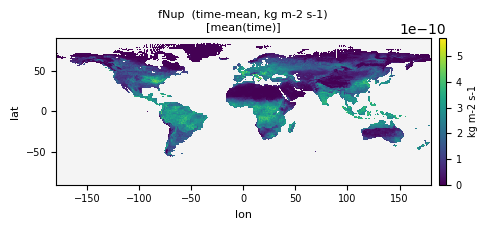
| Quantity | Expected | Observed |
|---|---|---|
| min | 0 | 0 |
| mean | ~3e-10 | 1.574e-10 |
| max | ~3e-8 | 3.250e-09 |
Affected files (2)
- fNup_tavg-u-hxy-lnd_mon_glb_gn_AWI-ESM-3_picontrol_r1i1p1f1_158601-158612.nc
- fNup_tavg-u-hxy-lnd_mon_glb_gn_AWI-ESM-3_picontrol_r1i1p1f1_158701-158712.nc
Total Nitrogen Mass Flux from Vegetation to Litter
CF: nitrogen_mass_flux_into_litter_from_vegetation
In accordance with common usage in geophysical disciplines, "flux" implies per unit area, called "flux density" in physics. "Litter" is dead plant material in or above the soil. "Vegetation" means any living plants e.g. trees, shrubs, grass.
| Quantity | Expected | Observed |
|---|---|---|
| min | 0 | 0 |
| mean | ~5e-11 | 1.546e-10 |
| max | ~3e-9 | 8.295e-09 |
Affected files (2)
- fNVegLitter_tavg-u-hxy-lnd_mon_glb_gn_AWI-ESM-3_picontrol_r1i1p1f1_158601-158612.nc
- fNVegLitter_tavg-u-hxy-lnd_mon_glb_gn_AWI-ESM-3_picontrol_r1i1p1f1_158701-158712.nc
Carbon Mass Flux from Vegetation into Atmosphere Due to CO2 Emission from All Fire [kgC m-2 s-1]
CF: surface_upward_mass_flux_of_carbon_dioxide_expressed_as_carbon_due_to_emission_from_vegetation_in_fires
Required for unambiguous separation of vegetation and soil + litter turnover times, since total fire flux draws from both sources
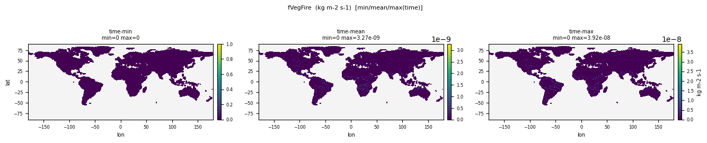
| Quantity | Expected | Observed |
|---|---|---|
| min | 0 | 0 |
| mean | ~3e-11 | 2.708e-11 |
| max | ~3e-8 | 3.922e-08 |
Affected files (2)
- fVegFire_tavg-u-hxy-lnd_mon_glb_gn_AWI-ESM-3_picontrol_r1i1p1f1_158601-158612.nc
- fVegFire_tavg-u-hxy-lnd_mon_glb_gn_AWI-ESM-3_picontrol_r1i1p1f1_158701-158712.nc
Carbon Mass Flux out of Atmosphere Due to Gross Primary Production on Land [kgC m-2 s-1]
CF: gross_primary_productivity_of_biomass_expressed_as_carbon
The rate of synthesis of biomass from inorganic precursors by autotrophs ("producers") expressed as the mass of carbon which it contains. For example, photosynthesis in plants or phytoplankton. The producers also respire some of this biomass and the difference is referred to as the net primary production.
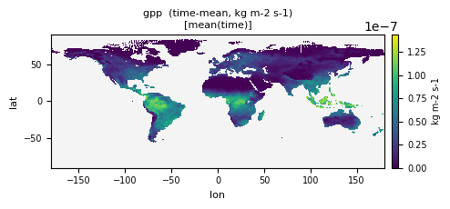
| Quantity | Expected | Observed |
|---|---|---|
| min | 0 | -8.488e-314 |
| mean | ~3.5e-8 | 3.404e-08 |
| max | ~1e-7 | 1.977e-07 |
Affected files (8)
- gpp_tavg-u-hxy-lnd_mon_glb_gn_AWI-ESM-3_picontrol_r1i1p1f1_158601-158612.nc
- gpp_tavg-u-hxy-lnd_mon_glb_gn_AWI-ESM-3_picontrol_r1i1p1f1_158701-158712.nc
- gpp_tavg-u-hxy-ng_mon_glb_gn_AWI-ESM-3_picontrol_r1i1p1f1_158601-158612.nc
- gpp_tavg-u-hxy-ng_mon_glb_gn_AWI-ESM-3_picontrol_r1i1p1f1_158701-158712.nc
- gpp_tavg-u-hxy-shb_mon_glb_gn_AWI-ESM-3_picontrol_r1i1p1f1_158601-158612.nc
- gpp_tavg-u-hxy-shb_mon_glb_gn_AWI-ESM-3_picontrol_r1i1p1f1_158701-158712.nc
- gpp_tavg-u-hxy-tree_mon_glb_gn_AWI-ESM-3_picontrol_r1i1p1f1_158601-158612.nc
- gpp_tavg-u-hxy-tree_mon_glb_gn_AWI-ESM-3_picontrol_r1i1p1f1_158701-158712.nc
Gross Primary Production on Land-Use Tile as Carbon Mass Flux [kgC m-2 s-1]
CF: gross_primary_productivity_of_biomass_expressed_as_carbon
The rate of synthesis of biomass from inorganic precursors by autotrophs ("producers") expressed as the mass of carbon which it contains. For example, photosynthesis in plants or phytoplankton. The producers also respire some of this biomass and the difference is referred to as the net primary production. Reported on land-use tiles.
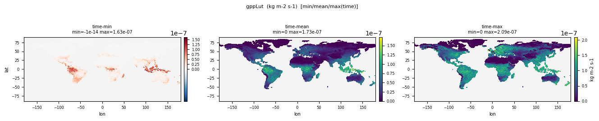
| Quantity | Expected | Observed |
|---|---|---|
| min | 0 | -1.000e-14 |
| mean | ~3.5e-8 | 3.626e-08 |
| max | ~1e-7 | 2.087e-07 |
Affected files (2)
- gppLut_tavg-u-hxy-multi_mon_glb_gn_AWI-ESM-3_picontrol_r1i1p1f1_158601-158612.nc
- gppLut_tavg-u-hxy-multi_mon_glb_gn_AWI-ESM-3_picontrol_r1i1p1f1_158701-158712.nc
Leaf Area Index
CF: leaf_area_index
A ratio obtained by dividing the total upper leaf surface area of vegetation by the (horizontal) surface area of the land on which it grows.
| Quantity | Expected | Observed |
|---|---|---|
| min | 0 | 0 |
| mean | ~1.2 | 0.4738 |
| max | ~7 | 10.000 |
Affected files (3)
- lai_tavg-u-hxy-lnd_day_glb_gn_AWI-ESM-3_picontrol_r1i1p1f1_15860115-15861215.nc
- lai_tavg-u-hxy-lnd_day_glb_gn_AWI-ESM-3_picontrol_r1i1p1f1_15870115-15871215.nc
- lai_tavg-u-hxy-lnd_mon_glb_gn_AWI-ESM-3_picontrol_r1i1p1f1_158701-158712.nc
Leaf Area Index on Land-Use Tile
CF: leaf_area_index
A ratio obtained by dividing the total upper leaf surface area of vegetation by the (horizontal) surface area of the land on which it grows.
| Quantity | Expected | Observed |
|---|---|---|
| min | 0 | 0 |
| mean | ~1.2 | 1.994 |
| max | ~7 | 15.096 |
Affected files (2)
- laiLut_tavg-u-hxy-multi_mon_glb_gn_AWI-ESM-3_picontrol_r1i1p1f1_158601-158612.nc
- laiLut_tavg-u-hxy-multi_mon_glb_gn_AWI-ESM-3_picontrol_r1i1p1f1_158701-158712.nc
Soil Frozen Water Content
CF: soil_frozen_water_content
the mass (summed over all all layers) of frozen water.
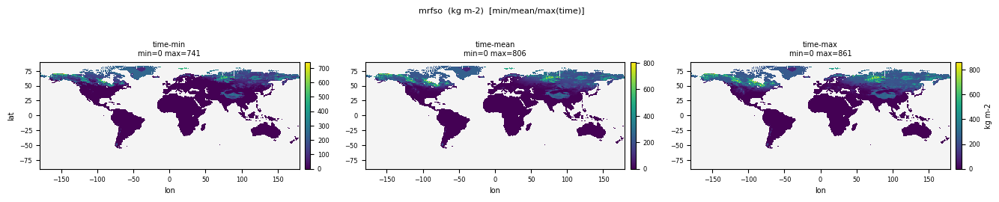
| Quantity | Expected | Observed |
|---|---|---|
| min | 0 | 0 |
| mean | ~200 | 52.206 |
| max | ~5000 | 908.1 |
Affected files (2)
- mrfso_tavg-u-hxy-lnd_mon_glb_gn_AWI-ESM-3_picontrol_r1i1p1f1_158601-158612.nc
- mrfso_tavg-u-hxy-lnd_mon_glb_gn_AWI-ESM-3_picontrol_r1i1p1f1_158701-158712.nc
Liquid Water Content of Soil Layer
CF: liquid_water_content_of_soil_layer
in each soil layer, the mass of water in liquid phase. Reported as "missing" for grid cells occupied entirely by "sea"
| Quantity | Expected | Observed |
|---|---|---|
| min | 0 | 0 |
| mean | ~30 | 20.749 |
| max | ~300 | 75.593 |
Affected files (2)
- mrsll_tavg-sl-hxy-lnd_mon_glb_gn_AWI-ESM-3_picontrol_r1i1p1f1_158601-158612.nc
- mrsll_tavg-sl-hxy-lnd_mon_glb_gn_AWI-ESM-3_picontrol_r1i1p1f1_158701-158712.nc
Soil moisture in the top 1 m of the soil column
CF: mass_content_of_water_in_soil_layer
Soil moisture at 3hr but for 0-1m
| Quantity | Expected | Observed |
|---|---|---|
| min | 0 | -3.979e-12 |
| mean | ~100 | 71.546 |
| max | ~500 | 766.0 |
Affected files (10)
- mrsol_tavg-d100cm-hxy-lnd_3hr_glb_gn_AWI-ESM-3_picontrol_r1i1p1f1_158701010430-158712312230.nc
- mrsol_tavg-d100cm-hxy-lnd_3hr_glb_gn_AWI-ESM-3_picontrol_r1i1p1f1_158801010130-158801010130.nc
- mrsol_tavg-d10cm-hxy-lnd_day_glb_gn_AWI-ESM-3_picontrol_r1i1p1f1_15870101-15871231.nc
- mrsol_tavg-d10cm-hxy-lnd_day_glb_gn_AWI-ESM-3_picontrol_r1i1p1f1_15880101-15880101.nc
- mrsol_tavg-d10cm-hxy-lnd_mon_glb_gn_AWI-ESM-3_picontrol_r1i1p1f1_158601-158612.nc
- mrsol_tavg-d10cm-hxy-lnd_mon_glb_gn_AWI-ESM-3_picontrol_r1i1p1f1_158701-158712.nc
- mrsol_tavg-sl-hxy-lnd_mon_glb_gn_AWI-ESM-3_picontrol_r1i1p1f1_158601-158612.nc
- mrsol_tavg-sl-hxy-lnd_mon_glb_gn_AWI-ESM-3_picontrol_r1i1p1f1_158701-158712.nc
- mrsol_tpt-d10cm-hxy-lnd_3hr_glb_gn_AWI-ESM-3_picontrol_r1i1p1f1_158701010430-158712312230.nc
- mrsol_tpt-d10cm-hxy-lnd_3hr_glb_gn_AWI-ESM-3_picontrol_r1i1p1f1_158801010130-158801010130.nc
Moisture in Upper Portion of Soil Column of Land-Use Tile
CF: mass_content_of_water_in_soil_layer
the mass of water in all phases in a thin surface layer; integrate over uppermost 10cm
| Quantity | Expected | Observed |
|---|---|---|
| min | 0 | 0 |
| mean | ~100 | 358.3 |
| max | ~500 | 1397.7 |
Affected files (2)
- mrsolLut_tavg-d10cm-hxy-multi_mon_glb_gn_AWI-ESM-3_picontrol_r1i1p1f1_158601-158612.nc
- mrsolLut_tavg-d10cm-hxy-multi_mon_glb_gn_AWI-ESM-3_picontrol_r1i1p1f1_158701-158712.nc
Terrestrial Water Storage
CF: land_water_amount
canopy_and_surface_and_subsurface_water_amount
| Quantity | Expected | Observed |
|---|---|---|
| min | 0 | -3.950e-35 |
| mean | ~1500 | 492.9 |
| max | ~1e5 | 12214.0 |
Affected files (1)
- mrtws_tavg-u-hxy-lnd_day_glb_gn_AWI-ESM-3_picontrol_r1i1p1f1_15870101-15871231.nc
Nitrogen Mass in Litter Pool
CF: litter_mass_content_of_nitrogen
Report missing data over ocean grid cells. For fractional land report value averaged over the land fraction.
| Quantity | Expected | Observed |
|---|---|---|
| min | 0 | 0 |
| mean | ~0.05 | 0.01139 |
| max | ~1 | 0.1265 |
Affected files (2)
- nLitter_tavg-u-hxy-lnd_mon_glb_gn_AWI-ESM-3_picontrol_r1i1p1f1_158601-158612.nc
- nLitter_tavg-u-hxy-lnd_mon_glb_gn_AWI-ESM-3_picontrol_r1i1p1f1_158701-158712.nc
Nitrogen Mass in Below-Ground Litter (non CWD)
CF: subsurface_litter_mass_content_of_nitrogen
"Content" indicates a quantity per unit area. "Litter" is dead plant material in or above the soil. It is distinct from coarse wood debris. The precise distinction between "fine" and "coarse" is model dependent. "Subsurface litter" means the part of the litter mixed within the soil below the surface. The sum of the quantities with standard names wood_debris_mass_content_of_nitrogen, surface_litter_mass_content_of_nitrogen and subsurface_litter_mass_content_of_nitrogen is the total nitrogen mass content of dead plant material.
| Quantity | Expected | Observed |
|---|---|---|
| min | 0 | 0 |
| mean | ~0.03 | 0.003064 |
| max | ~0.3 | 0.06693 |
Affected files (2)
- nLitterSubSurf_tavg-u-hxy-lnd_mon_glb_gn_AWI-ESM-3_picontrol_r1i1p1f1_158601-158612.nc
- nLitterSubSurf_tavg-u-hxy-lnd_mon_glb_gn_AWI-ESM-3_picontrol_r1i1p1f1_158701-158712.nc
Mineral Nitrogen in the Soil
CF: soil_mass_content_of_inorganic_nitrogen_expressed_as_nitrogen
SUM of ammonium, nitrite, nitrate, etc over all soil layers
| Quantity | Expected | Observed |
|---|---|---|
| min | 0 | 9.005e-08 |
| mean | ~0.05 | 0.008191 |
| max | ~1 | 1.670 |
Affected files (2)
- nMineral_tavg-u-hxy-lnd_mon_glb_gn_AWI-ESM-3_picontrol_r1i1p1f1_158601-158612.nc
- nMineral_tavg-u-hxy-lnd_mon_glb_gn_AWI-ESM-3_picontrol_r1i1p1f1_158701-158712.nc
Mineral Ammonium in the Soil
CF: soil_mass_content_of_inorganic_ammonium_expressed_as_nitrogen
SUM of ammonium over all soil layers
| Quantity | Expected | Observed |
|---|---|---|
| min | 0 | 0 |
| mean | ~0.02 | 0.003728 |
| max | ~0.5 | 0.2904 |
Affected files (2)
- nMineralNH4_tavg-u-hxy-lnd_mon_glb_gn_AWI-ESM-3_picontrol_r1i1p1f1_158601-158612.nc
- nMineralNH4_tavg-u-hxy-lnd_mon_glb_gn_AWI-ESM-3_picontrol_r1i1p1f1_158701-158712.nc
Mineral Nitrate in the Soil
CF: soil_mass_content_of_inorganic_nitrate_expressed_as_nitrogen
SUM of nitrate over all soil layers
| Quantity | Expected | Observed |
|---|---|---|
| min | 0 | 7.370e-09 |
| mean | ~0.02 | 0.004464 |
| max | ~0.5 | 1.664 |
Affected files (2)
- nMineralNO3_tavg-u-hxy-lnd_mon_glb_gn_AWI-ESM-3_picontrol_r1i1p1f1_158601-158612.nc
- nMineralNO3_tavg-u-hxy-lnd_mon_glb_gn_AWI-ESM-3_picontrol_r1i1p1f1_158701-158712.nc
Net Primary Production Allocated to Leaves as Carbon Mass Flux [kgC m-2 s-1]
CF: net_primary_productivity_of_biomass_expressed_as_carbon_accumulated_in_leaves
This is the rate of carbon uptake by leaves due to NPP
| Quantity | Expected | Observed |
|---|---|---|
| min | 0 | 0 |
| mean | ~6e-9 | 2.753e-09 |
| max | ~1.5e-7 | 1.907e-07 |
Affected files (2)
- nppLeaf_tavg-u-hxy-lnd_mon_glb_gn_AWI-ESM-3_picontrol_r1i1p1f1_158601-158612.nc
- nppLeaf_tavg-u-hxy-lnd_mon_glb_gn_AWI-ESM-3_picontrol_r1i1p1f1_158701-158712.nc
Net Primary Production on Land-Use Tile as Carbon Mass Flux [kgC m-2 s-1]
CF: net_primary_productivity_of_biomass_expressed_as_carbon
"Production of carbon" means the production of biomass expressed as the mass of carbon which it contains. Net primary production is the excess of gross primary production (rate of synthesis of biomass from inorganic precursors) by autotrophs ("producers"), for example, photosynthesis in plants or phytoplankton, over the rate at which the autotrophs themselves respire some of this biomass. "Productivity" means production per unit area. The phrase "expressed_as" is used in the construction A_expressed_as_B, where B is a chemical constituent of A. It means that the quantity indicated by the standard name is calculated solely with respect to the B contained in A, neglecting all other chemical constituents of A.
| Quantity | Expected | Observed |
|---|---|---|
| min | 0 | -6.592e-08 |
| mean | ~1.9e-8 | 1.378e-08 |
| max | ~5e-7 | 1.399e-07 |
Affected files (2)
- nppLut_tavg-u-hxy-multi_mon_glb_gn_AWI-ESM-3_picontrol_r1i1p1f1_158601-158612.nc
- nppLut_tavg-u-hxy-multi_mon_glb_gn_AWI-ESM-3_picontrol_r1i1p1f1_158701-158712.nc
Net Primary Production Allocated to Roots as Carbon Mass Flux [kgC m-2 s-1]
CF: net_primary_productivity_of_biomass_expressed_as_carbon_accumulated_in_roots
This is the rate of carbon uptake by roots due to NPP
| Quantity | Expected | Observed |
|---|---|---|
| min | 0 | 0 |
| mean | ~6e-9 | 5.263e-09 |
| max | ~1.5e-7 | 3.542e-07 |
Affected files (2)
- nppRoot_tavg-u-hxy-lnd_mon_glb_gn_AWI-ESM-3_picontrol_r1i1p1f1_158601-158612.nc
- nppRoot_tavg-u-hxy-lnd_mon_glb_gn_AWI-ESM-3_picontrol_r1i1p1f1_158701-158712.nc
Net Primary Production Allocated to Stem as Carbon Mass Flux [kgC m-2 s-1]
CF: net_primary_productivity_of_biomass_expressed_as_carbon_accumulated_in_stems
added for completeness with npp_root
| Quantity | Expected | Observed |
|---|---|---|
| min | 0 | 0 |
| mean | ~6e-9 | 3.324e-09 |
| max | ~1.5e-7 | 4.963e-07 |
Affected files (2)
- nppStem_tavg-u-hxy-lnd_mon_glb_gn_AWI-ESM-3_picontrol_r1i1p1f1_158601-158612.nc
- nppStem_tavg-u-hxy-lnd_mon_glb_gn_AWI-ESM-3_picontrol_r1i1p1f1_158701-158712.nc
Nitrogen Mass in Roots
CF: root_mass_content_of_nitrogen
including fine and coarse roots.
| Quantity | Expected | Observed |
|---|---|---|
| min | 0 | 0 |
| mean | ~0.02 | 0.003288 |
| max | ~0.2 | 0.03268 |
Affected files (2)
- nRoot_tavg-u-hxy-lnd_mon_glb_gn_AWI-ESM-3_picontrol_r1i1p1f1_158601-158612.nc
- nRoot_tavg-u-hxy-lnd_mon_glb_gn_AWI-ESM-3_picontrol_r1i1p1f1_158701-158712.nc
Precipitation onto Canopy
CF: precipitation_flux_onto_canopy
the precipitation flux that is intercepted by the vegetation canopy (if present in model) before reaching the ground.
| Quantity | Expected | Observed |
|---|---|---|
| min | 0 | 0 |
| mean | ~1e-5 | 1.545e-06 |
| max | ~3e-4 | 5.362e-05 |
Affected files (2)
- prveg_tavg-u-hxy-lnd_mon_glb_gn_AWI-ESM-3_picontrol_r1i1p1f1_158601-158612.nc
- prveg_tavg-u-hxy-lnd_mon_glb_gn_AWI-ESM-3_picontrol_r1i1p1f1_158701-158712.nc
Autotrophic Respiration on Land-Use Tile as Carbon Mass Flux [kgC m-2 s-1]
CF: surface_upward_mass_flux_of_carbon_dioxide_expressed_as_carbon_due_to_plant_respiration
Carbon mass flux per unit area into atmosphere due to autotrophic respiration on land (respiration by producers) [see rh for heterotrophic production]. Calculated on land-use tiles.
| Quantity | Expected | Observed |
|---|---|---|
| min | 0 | -3.158e-08 |
| mean | ~2e-8 | 2.248e-08 |
| max | ~5e-7 | 1.342e-07 |
Affected files (2)
- raLut_tavg-u-hxy-multi_mon_glb_gn_AWI-ESM-3_picontrol_r1i1p1f1_158601-158612.nc
- raLut_tavg-u-hxy-multi_mon_glb_gn_AWI-ESM-3_picontrol_r1i1p1f1_158701-158712.nc
Carbon Mass Flux into Atmosphere Due to Heterotrophic Respiration from Soil on Land
CF: surface_upward_mass_flux_of_carbon_due_to_heterotrophic_respiration_in_soil
Needed to calculate soil bulk turnover time
| Quantity | Expected | Observed |
|---|---|---|
| min | 0 | -8.488e-314 |
| mean | ~9e-9 | 4.282e-09 |
| max | ~1.5e-7 | 3.966e-08 |
Affected files (2)
- rhSoil_tavg-u-hxy-lnd_mon_glb_gn_AWI-ESM-3_picontrol_r1i1p1f1_158601-158612.nc
- rhSoil_tavg-u-hxy-lnd_mon_glb_gn_AWI-ESM-3_picontrol_r1i1p1f1_158701-158712.nc
Maximum Root Depth
CF: root_depth
report the maximum soil depth reachable by plant roots (if defined in model), i.e., the maximum soil depth from which they can extract moisture; report as "missing" where the land fraction is 0.
| Quantity | Expected | Observed |
|---|---|---|
| min | 0 | 0 |
| mean | ~2 | 0.1579 |
| max | ~10 | 2.000 |
Affected files (1)
- rootd_ti-u-hxy-lnd_fx_glb_gn_AWI-ESM-3_picontrol_r1i1p1f1.nc
Surface Snow and Ice Sublimation Flux
CF: tendency_of_atmosphere_mass_content_of_water_vapor_due_to_sublimation_of_surface_snow_and_ice
surface upward flux of water vapor due to sublimation of surface snow and ice
| Quantity | Expected | Observed |
|---|---|---|
| min | -1e-4 | -1.025e-05 |
| mean | ~1e-7 | 1.024e-07 |
| max | 1e-4 | 1.529e-05 |
Affected files (3)
- sbl_tavg-u-hxy-lnd_mon_glb_gn_AWI-ESM-3_picontrol_r1i1p1f1_158701-158712.nc
- sbl_tavg-u-hxy-u_day_glb_gn_AWI-ESM-3_picontrol_r1i1p1f1_15870101-15871231.nc
- sbl_tavg-u-hxy-u_mon_glb_gn_AWI-ESM-3_picontrol_r1i1p1f1_158701-158712.nc
Surface Snow Amount
CF: surface_snow_amount
the mass of surface snow on the land portion of the grid cell divided by the land area in the grid cell; reported as missing where the land fraction is 0; excludes snow on vegetation canopy or on sea ice.
| Quantity | Expected | Observed |
|---|---|---|
| min | 0 | 0 |
| mean | 20 | 278.4 |
| max | 3000 | 10000.0 |
Affected files (4)
- snw_tavg-u-hxy-lnd_day_glb_gn_AWI-ESM-3_picontrol_r1i1p1f1_15870101-15871231.nc
- snw_tavg-u-hxy-lnd_mon_glb_gn_AWI-ESM-3_picontrol_r1i1p1f1_158601-158612.nc
- snw_tavg-u-hxy-lnd_mon_glb_gn_AWI-ESM-3_picontrol_r1i1p1f1_158701-158712.nc
- snw_tavg-u-hxy-si_mon_glb_gn_AWI-ESM-3_picontrol_r1i1p1f1_158701-158712.nc
Net radiative flux at surface
CF: surface_net_downward_radiative_flux
Net radiative flux at surface
| Quantity | Expected | Observed |
|---|---|---|
| min | -100 | -221.5 |
| mean | 60 | 111.3 |
| max | 250 | 1007.0 |
Affected files (1)
- srfrad_tavg-u-hxy-u_3hr_glb_gn_AWI-ESM-3_picontrol_r1i1p1f1_158701010130-158712312230.nc
Snow Water Equivalent on Land-Use Tile
CF: lwe_thickness_of_surface_snow_amount
The surface called "surface" means the lower boundary of the atmosphere. "lwe" means liquid water equivalent. "Amount" means mass per unit area. The construction lwe_thickness_of_X_amount or _content means the vertical extent of a layer of liquid water having the same mass per unit area. Surface amount refers to the amount on the ground, excluding that on the plant or vegetation canopy.
| Quantity | Expected | Observed |
|---|---|---|
| min | 0 | 0 |
| mean | ~0.02 | 0.2304 |
| max | ~3 | 10.000 |
Affected files (2)
- sweLut_tavg-u-hxy-multi_mon_glb_gn_AWI-ESM-3_picontrol_r1i1p1f1_158601-158612.nc
- sweLut_tavg-u-hxy-multi_mon_glb_gn_AWI-ESM-3_picontrol_r1i1p1f1_158701-158712.nc
Temperature of Soil
CF: soil_temperature
Temperature of each soil layer. Reported as "missing" for grid cells occupied entirely by "sea".
| Quantity | Expected | Observed |
|---|---|---|
| min | 220 | 64.054 |
| mean | ~285 | 284.1 |
| max | 325 | 312.0 |
Affected files (2)
- tsl_tavg-sl-hxy-lnd_mon_glb_gn_AWI-ESM-3_picontrol_r1i1p1f1_158601-158612.nc
- tsl_tavg-sl-hxy-lnd_mon_glb_gn_AWI-ESM-3_picontrol_r1i1p1f1_158701-158712.nc
Grid Averaged Methane Emissions from Wetlands
CF: surface_net_upward_mass_flux_of_methane_due_to_emission_from_wetland_biological_processes
Net upward flux of methane (NH4) from wetlands (areas where water covers the soil, or is present either at or near the surface of the soil all year or for varying periods of time during the year, including during the growing season).
| Quantity | Expected | Observed |
|---|---|---|
| min | -1e-9 | -1.000e-14 |
| mean | ~5e-12 | 1.859e-11 |
| max | ~5e-9 | 1.047e-09 |
Affected files (2)
- wetlandCH4_tavg-u-hxy-lnd_mon_glb_gn_AWI-ESM-3_picontrol_r1i1p1f1_158601-158612.nc
- wetlandCH4_tavg-u-hxy-lnd_mon_glb_gn_AWI-ESM-3_picontrol_r1i1p1f1_158701-158712.nc
Grid Averaged Methane Consumption (Methanotrophy) from Wetlands
CF: surface_downward_mass_flux_of_methane_due_to_wetland_biological_consumption
Biological consumption (methanotrophy) of methane (NH4) by wetlands (areas where water covers the soil, or is present either at or near the surface of the soil all year or for varying periods of time during the year, including during the growing season).
| Quantity | Expected | Observed |
|---|---|---|
| min | 0 | 0 |
| mean | ~1e-12 | 1.917e-13 |
| max | ~5e-10 | 7.474e-11 |
Affected files (2)
- wetlandCH4cons_tavg-u-hxy-lnd_mon_glb_gn_AWI-ESM-3_picontrol_r1i1p1f1_158601-158612.nc
- wetlandCH4cons_tavg-u-hxy-lnd_mon_glb_gn_AWI-ESM-3_picontrol_r1i1p1f1_158701-158712.nc
Grid Averaged Methane Production (Methanogenesis) from Wetlands
CF: surface_upward_mass_flux_of_methane_due_to_emission_from_wetland_biological_production
Biological emissions (methanogenesis) of methane (NH4) from wetlands (areas where water covers the soil, or is present either at or near the surface of the soil all year or for varying periods of time during the year, including during the growing season).
| Quantity | Expected | Observed |
|---|---|---|
| min | 0 | 0 |
| mean | ~6e-12 | 1.945e-11 |
| max | ~5e-9 | 1.047e-09 |
Affected files (2)
- wetlandCH4prod_tavg-u-hxy-lnd_mon_glb_gn_AWI-ESM-3_picontrol_r1i1p1f1_158601-158612.nc
- wetlandCH4prod_tavg-u-hxy-lnd_mon_glb_gn_AWI-ESM-3_picontrol_r1i1p1f1_158701-158712.nc
PASS
Percentage Cover by C3 Plant Functional Type
CF: area_fraction
Percentage of entire grid cell that is covered by C3 PFTs (including grass, crops, and trees).
| Quantity | Expected | Observed |
|---|---|---|
| min | 0 | 0 |
| mean | ~25 | 35.284 |
| max | 100 | 100.0 |
Affected files (2)
- c3PftFrac_tavg-u-hxy-u_mon_glb_gn_AWI-ESM-3_picontrol_r1i1p1f1_158601-158612.nc
- c3PftFrac_tavg-u-hxy-u_mon_glb_gn_AWI-ESM-3_picontrol_r1i1p1f1_158701-158712.nc
Percentage Cover by C4 Plant Functional Type
CF: area_fraction
Percentage of entire grid cell that is covered by C4 PFTs (including grass and crops).
| Quantity | Expected | Observed |
|---|---|---|
| min | 0 | 0 |
| mean | ~5 | 5.335 |
| max | 100 | 91.700 |
Affected files (2)
- c4PftFrac_tavg-u-hxy-u_mon_glb_gn_AWI-ESM-3_picontrol_r1i1p1f1_158601-158612.nc
- c4PftFrac_tavg-u-hxy-u_mon_glb_gn_AWI-ESM-3_picontrol_r1i1p1f1_158701-158712.nc
Carbon Mass in Leaves
CF: leaf_mass_content_of_carbon
Carbon mass per unit area in leaves.
| Quantity | Expected | Observed |
|---|---|---|
| min | 0 | 0 |
| mean | ~0.3 | 0.1057 |
| max | ~2 | 0.7706 |
Affected files (2)
- cLeaf_tavg-u-hxy-lnd_mon_glb_gn_AWI-ESM-3_picontrol_r1i1p1f1_158601-158612.nc
- cLeaf_tavg-u-hxy-lnd_mon_glb_gn_AWI-ESM-3_picontrol_r1i1p1f1_158701-158712.nc
Canopy Covered Area Percentage
CF: vegetation_area_fraction
Canopy covered fraction
| Quantity | Expected | Observed |
|---|---|---|
| min | 0 | 0 |
| mean | ~70 | 40.518 |
| max | 100 | 100.0 |
Affected files (2)
- cnc_tavg-u-hxy-u_mon_glb_gn_AWI-ESM-3_picontrol_r1i1p1f1_158601-158612.nc
- cnc_tavg-u-hxy-u_mon_glb_gn_AWI-ESM-3_picontrol_r1i1p1f1_158701-158712.nc
Carbon Mass in Vegetation Components Other than Leaves, Stems and Roots
CF: miscellaneous_living_matter_mass_content_of_carbon
E.g. fruits, seeds, etc.
| Quantity | Expected | Observed |
|---|---|---|
| min | 0 | -0.4337 |
| mean | ~0.2 | 0.2851 |
| max | ~3 | 2.562 |
Affected files (2)
- cOther_tavg-u-hxy-lnd_mon_glb_gn_AWI-ESM-3_picontrol_r1i1p1f1_158601-158612.nc
- cOther_tavg-u-hxy-lnd_mon_glb_gn_AWI-ESM-3_picontrol_r1i1p1f1_158701-158712.nc
Carbon Mass in Products of Land-Use Change
CF: carbon_mass_content_of_forestry_and_agricultural_products
Carbon mass per unit area in that has been removed from the environment through land use change.
| Quantity | Expected | Observed |
|---|---|---|
| min | 0 | 0 |
| mean | ~0 | 0 |
| max | ~0 | 0 |
Affected files (2)
- cProduct_tavg-u-hxy-lnd_mon_glb_gn_AWI-ESM-3_picontrol_r1i1p1f1_158601-158612.nc
- cProduct_tavg-u-hxy-lnd_mon_glb_gn_AWI-ESM-3_picontrol_r1i1p1f1_158701-158712.nc
Wood and Agricultural Product Pool Carbon Associated with Land-Use Tiles
CF: carbon_mass_content_of_forestry_and_agricultural_products
Anthropogenic pools associated with land use tiles into which harvests and cleared carbon are deposited before release into atmosphere PLUS any remaining anthropogenic pools that may be associated with lands which were converted into land use tiles during reported period. Examples of products include paper, cardboard, timber for construction, and crop harvest for food or fuel. Does NOT include residue which is deposited into soil or litter; end of year values (not annual mean).
| Quantity | Expected | Observed |
|---|---|---|
| min | 0 | 0 |
| mean | ~0 | 0 |
| max | ~0 | 0 |
Affected files (1)
- cProductLut_tpt-u-hxy-multi_yr_glb_gn_AWI-ESM-3_picontrol_r1i1p1f1_1586-1587.nc
Percentage Crop Cover
CF: area_fraction
Percentage of entire grid cell that is covered by crop.
| Quantity | Expected | Observed |
|---|---|---|
| min | 0 | 0 |
| mean | ~5 | 1.101 |
| max | 100 | 74.073 |
Affected files (3)
- cropFrac_tavg-u-hxy-u_mon_glb_gn_AWI-ESM-3_picontrol_r1i1p1f1_158601-158612.nc
- cropFrac_tavg-u-hxy-u_mon_glb_gn_AWI-ESM-3_picontrol_r1i1p1f1_158701-158712.nc
- cropFrac_tavg-u-hxy-u_yr_glb_gn_AWI-ESM-3_picontrol_r1i1p1f1_1586-1587.nc
Percentage Cover by C4 Crops
CF: area_fraction
Percentage of entire grid cell covered by C4 crops
| Quantity | Expected | Observed |
|---|---|---|
| min | 0 | 0 |
| mean | ~1 | 0.5236 |
| max | 100 | 33.363 |
Affected files (2)
- cropFracC4_tavg-u-hxy-u_mon_glb_gn_AWI-ESM-3_picontrol_r1i1p1f1_158601-158612.nc
- cropFracC4_tavg-u-hxy-u_mon_glb_gn_AWI-ESM-3_picontrol_r1i1p1f1_158701-158712.nc
Change in Interception Storage
CF: change_over_time_in_canopy_water_amount
change_over_time_in_canopy_water_amount
| Quantity | Expected | Observed |
|---|---|---|
| min | -5 | -1.806 |
| mean | ~0 | -3.338e-06 |
| max | 5 | 1.701 |
Affected files (1)
- dcw_tavg-u-hxy-lnd_day_glb_gn_AWI-ESM-3_picontrol_r1i1p1f1_15870102-15871231.nc
Change in Surface Water Storage
CF: change_over_time_in_land_water_amount
Change in Surface Water Storage
| Quantity | Expected | Observed |
|---|---|---|
| min | -500 | -185.9 |
| mean | ~0 | 0.003347 |
| max | 500 | 171.7 |
Affected files (1)
- dsw_tavg-u-hxy-lnd_day_glb_gn_AWI-ESM-3_picontrol_r1i1p1f1_15870102-15871231.nc
Potential Evapotranspiration
CF: water_potential_evaporation_flux
water_potential_evapotranspiration_flux
| Quantity | Expected | Observed |
|---|---|---|
| min | 0 | 0 |
| mean | ~5e-5 | 3.870e-05 |
| max | ~3e-4 | 1.291e-04 |
Affected files (2)
- evspsblpot_tavg-u-hxy-lnd_mon_glb_gn_AWI-ESM-3_picontrol_r1i1p1f1_158601-158612.nc
- evspsblpot_tavg-u-hxy-lnd_mon_glb_gn_AWI-ESM-3_picontrol_r1i1p1f1_158701-158712.nc
Deforested Biomass That Goes into Atmosphere as a Result of Anthropogenic Land-Use Change [kgC m-2 s-1]
CF: surface_net_upward_mass_flux_of_carbon_dioxide_expressed_as_carbon_due_to_emission_from_anthropogenic_land_use_change
When land use change results in deforestation of natural vegetation (trees or grasslands) then natural biomass is removed. The treatment of deforested biomass differs significantly across models, but it should be straight-forward to compare deforested biomass across models.
| Quantity | Expected | Observed |
|---|---|---|
| min | 0 | 0 |
| mean | ~0 | 0 |
| max | ~0 | 0 |
Affected files (2)
- fDeforestToAtmos_tavg-u-hxy-lnd_mon_glb_gn_AWI-ESM-3_picontrol_r1i1p1f1_158601-158612.nc
- fDeforestToAtmos_tavg-u-hxy-lnd_mon_glb_gn_AWI-ESM-3_picontrol_r1i1p1f1_158701-158712.nc
Deforested Biomass That Goes into Product Pool as a Result of Anthropogenic Land-Use Change
CF: carbon_mass_flux_into_forestry_and_agricultural_products_due_to_anthropogenic_land_use_or_land_cover_change
When land use change results in deforestation of natural vegetation (trees or grasslands) then natural biomass is removed. The treatment of deforested biomass differs significantly across models, but it should be straight-forward to compare deforested biomass across models.
| Quantity | Expected | Observed |
|---|---|---|
| min | 0 | 0 |
| mean | ~0 | 0 |
| max | ~0 | 0 |
Affected files (2)
- fDeforestToProduct_tavg-u-hxy-lnd_mon_glb_gn_AWI-ESM-3_picontrol_r1i1p1f1_158601-158612.nc
- fDeforestToProduct_tavg-u-hxy-lnd_mon_glb_gn_AWI-ESM-3_picontrol_r1i1p1f1_158701-158712.nc
Harvested Biomass That Goes into Product Pool
CF: mass_flux_of_carbon_into_forestry_and_agricultural_products_due_to_crop_harvesting
be it food or wood harvest, any carbon that is subsequently stored is reported here
| Quantity | Expected | Observed |
|---|---|---|
| min | 0 | 0 |
| mean | ~0 | 0 |
| max | ~0 | 0 |
Affected files (2)
- fHarvestToProduct_tavg-u-hxy-lnd_mon_glb_gn_AWI-ESM-3_picontrol_r1i1p1f1_158601-158612.nc
- fHarvestToProduct_tavg-u-hxy-lnd_mon_glb_gn_AWI-ESM-3_picontrol_r1i1p1f1_158701-158712.nc
Carbon Mass Flux from Litter, CWD or any non-Living Pool into Atmosphere Due to CO2 Emission from All Fire [kgC m-2 s-1]
CF: surface_upward_mass_flux_of_carbon_dioxide_expressed_as_carbon_due_to_emission_from_litter_in_fires
Required for unambiguous separation of vegetation and soil + litter turnover times, since total fire flux draws from both sources
| Quantity | Expected | Observed |
|---|---|---|
| min | 0 | 0 |
| mean | ~2e-11 | 0 |
| max | ~2e-9 | 0 |
Affected files (2)
- fLitterFire_tavg-u-hxy-lnd_mon_glb_gn_AWI-ESM-3_picontrol_r1i1p1f1_158601-158612.nc
- fLitterFire_tavg-u-hxy-lnd_mon_glb_gn_AWI-ESM-3_picontrol_r1i1p1f1_158701-158712.nc
Total Carbon Mass Flux from Litter to Soil
CF: carbon_mass_flux_into_soil_from_litter
Carbon mass flux per unit area into soil from litter (dead plant material in or above the soil).
| Quantity | Expected | Observed |
|---|---|---|
| min | 0 | 0 |
| mean | ~2e-9 | 2.967e-09 |
| max | ~5e-8 | 3.354e-08 |
Affected files (2)
- fLitterSoil_tavg-u-hxy-lnd_mon_glb_gn_AWI-ESM-3_picontrol_r1i1p1f1_158601-158612.nc
- fLitterSoil_tavg-u-hxy-lnd_mon_glb_gn_AWI-ESM-3_picontrol_r1i1p1f1_158701-158712.nc
Net Carbon Mass Flux into Atmosphere Due to Land-Use Change [kgC m-2 s-1]
CF: surface_net_upward_mass_flux_of_carbon_dioxide_expressed_as_carbon_due_to_emission_from_anthropogenic_land_use_change
Net Carbon Mass Flux into Atmosphere due to Land Use Change
| Quantity | Expected | Observed |
|---|---|---|
| min | -1e-9 | 0 |
| mean | ~0 | 0 |
| max | ~1e-9 | 0 |
Affected files (2)
- fLuc_tavg-u-hxy-lnd_mon_glb_gn_AWI-ESM-3_picontrol_r1i1p1f1_158601-158612.nc
- fLuc_tavg-u-hxy-lnd_mon_glb_gn_AWI-ESM-3_picontrol_r1i1p1f1_158701-158712.nc
Carbon Transferred Directly to Atmosphere Due to any Land-Use or Land-Cover Change Activities [kgC m-2 s-1]
CF: surface_upward_mass_flux_of_carbon_dioxide_expressed_as_carbon_due_to_anthropogenic_land_use_or_land_cover_change_excluding_forestry_and_agricultural_products
This annual mean flux refers to the transfer of carbon directly to the atmosphere due to any land-use or land-cover change activities. Include carbon transferred due to deforestation or agricultural directly into atmosphere, and emissions form anthropogenic pools into atmosphere
| Quantity | Expected | Observed |
|---|---|---|
| min | 0 | 0 |
| mean | ~0 | 0 |
| max | ~0 | 0 |
Affected files (2)
- fLulccAtmLut_tavg-u-hxy-multi_mon_glb_gn_AWI-ESM-3_picontrol_r1i1p1f1_158601-158612.nc
- fLulccAtmLut_tavg-u-hxy-multi_mon_glb_gn_AWI-ESM-3_picontrol_r1i1p1f1_158701-158712.nc
Total Nitrogen Lost to the Atmosphere (Including NHx, NOx, N2O, N2) from All Processes Except Fire
CF: surface_upward_mass_flux_of_nitrogen_compounds_expressed_as_nitrogen_due_to_all_land_processes_excluding_fires
Flux of Nitrogen from the land into the atmosphere due to all processes other than fire
| Quantity | Expected | Observed |
|---|---|---|
| min | 0 | 0 |
| mean | ~3e-12 | 6.452e-12 |
| max | ~3e-9 | 1.621e-09 |
Affected files (2)
- fNgasNonFire_tavg-u-hxy-lnd_mon_glb_gn_AWI-ESM-3_picontrol_r1i1p1f1_158601-158612.nc
- fNgasNonFire_tavg-u-hxy-lnd_mon_glb_gn_AWI-ESM-3_picontrol_r1i1p1f1_158701-158712.nc
Deforested or Harvested Biomass as a Result of Anthropogenic Land-Use or Change
CF: nitrogen_mass_flux_into_forestry_and_agricultural_products_due_to_anthropogenic_land_use_or_land_cover_change
When land use change results in deforestation of natural vegetation (trees or grasslands) then natural biomass is removed. The treatment of deforested biomass differs significantly across models, but it should be straight-forward to compare deforested biomass across models.
| Quantity | Expected | Observed |
|---|---|---|
| min | 0 | 0 |
| mean | ~0 | 0 |
| max | ~0 | 0 |
Affected files (2)
- fNProduct_tavg-u-hxy-lnd_mon_glb_gn_AWI-ESM-3_picontrol_r1i1p1f1_158601-158612.nc
- fNProduct_tavg-u-hxy-lnd_mon_glb_gn_AWI-ESM-3_picontrol_r1i1p1f1_158701-158712.nc
Decomposition out of Product Pools to CO2 in Atmosphere as Carbon Mass Flux [kgC m-2 s-1]
CF: tendency_of_atmosphere_mass_content_of_carbon_dioxide_expressed_as_carbon_due_to_emission_from_forestry_and_agricultural_products
Flux of CO2 from product pools into the atmosphere. Examples of "forestry and agricultural products" are paper, cardboard, furniture, timber for construction, biofuels and food for both humans and livestock. Models that simulate land use changes have one or more pools of carbon that represent these products in order to conserve carbon and allow its eventual release into the atmosphere, for example, when the products decompose in landfill sites.
| Quantity | Expected | Observed |
|---|---|---|
| min | 0 | 0 |
| mean | ~0 | 0 |
| max | ~0 | 0 |
Affected files (2)
- fProductDecomp_tavg-u-hxy-lnd_mon_glb_gn_AWI-ESM-3_picontrol_r1i1p1f1_158601-158612.nc
- fProductDecomp_tavg-u-hxy-lnd_mon_glb_gn_AWI-ESM-3_picontrol_r1i1p1f1_158701-158712.nc
Annual Gross Percentage That Was Transferred into This Tile from Other Land-Use Tiles
CF: area_fraction
Cumulative percentage transitions over the year; note that percentage should be reported as a percentage of atmospheric grid cell
| Quantity | Expected | Observed |
|---|---|---|
| min | 0 | 0 |
| mean | ~0 | 0 |
| max | ~0 | 0 |
Affected files (1)
- fracInLut_tsum-u-hxy-lnd_yr_glb_gn_AWI-ESM-3_picontrol_r1i1p1f1_1586-1587.nc
Percentage of Grid Cell for Each Land-Use Tile
CF: area_fraction
End of month values (not monthly mean); note that percentage should be reported as percentage of land grid cell (example: frac_lnd = 0.5, frac_ocn = 0.5, frac_crop_lnd = 0.2 (of land portion of grid cell), then frac_lut(crop) = 0.5\*0.2 = 0.1)
| Quantity | Expected | Observed |
|---|---|---|
| min | 0 | 0 |
| mean | ~25 | 85.912 |
| max | 100 | 100.0 |
Affected files (3)
- fracLut_tpt-u-hxy-u_mon_glb_gn_AWI-ESM-3_picontrol_r1i1p1f1_158601-158612.nc
- fracLut_tpt-u-hxy-u_mon_glb_gn_AWI-ESM-3_picontrol_r1i1p1f1_158701-158712.nc
- fracLut_tpt-u-hxy-u_yr_glb_gn_AWI-ESM-3_picontrol_r1i1p1f1_1586-1587.nc
Annual Gross Percentage of Land-Use Tile That Was Transferred into Other Land-Use Tiles
CF: area_fraction
Cumulative percentage transitions over the year; note that percentage should be reported as percentage of atmospheric grid cell
| Quantity | Expected | Observed |
|---|---|---|
| min | 0 | 0 |
| mean | ~0 | 0 |
| max | ~0 | 0 |
Affected files (1)
- fracOutLut_tsum-u-hxy-lnd_yr_glb_gn_AWI-ESM-3_picontrol_r1i1p1f1_1586-1587.nc
Natural Grass Area Percentage
CF: area_fraction
Percentage of entire grid cell that is covered by natural grass.
| Quantity | Expected | Observed |
|---|---|---|
| min | 0 | 0 |
| mean | ~20 | 9.603 |
| max | 100 | 99.546 |
Affected files (3)
- grassFrac_tavg-u-hxy-u_mon_glb_gn_AWI-ESM-3_picontrol_r1i1p1f1_158601-158612.nc
- grassFrac_tavg-u-hxy-u_mon_glb_gn_AWI-ESM-3_picontrol_r1i1p1f1_158701-158712.nc
- grassFrac_tavg-u-hxy-u_yr_glb_gn_AWI-ESM-3_picontrol_r1i1p1f1_1586-1587.nc
C3 Natural Grass Area Percentage
CF: area_fraction
Percentage of entire grid cell covered by C3 natural grass.
| Quantity | Expected | Observed |
|---|---|---|
| min | 0 | 0 |
| mean | ~15 | 5.628 |
| max | 100 | 99.546 |
Affected files (2)
- grassFracC3_tavg-u-hxy-u_mon_glb_gn_AWI-ESM-3_picontrol_r1i1p1f1_158601-158612.nc
- grassFracC3_tavg-u-hxy-u_mon_glb_gn_AWI-ESM-3_picontrol_r1i1p1f1_158701-158712.nc
C4 Natural Grass Area Percentage
CF: area_fraction
Percentage of entire grid cell covered by C4 natural grass.
| Quantity | Expected | Observed |
|---|---|---|
| min | 0 | 0 |
| mean | ~5 | 3.975 |
| max | 100 | 89.919 |
Affected files (2)
- grassFracC4_tavg-u-hxy-u_mon_glb_gn_AWI-ESM-3_picontrol_r1i1p1f1_158601-158612.nc
- grassFracC4_tavg-u-hxy-u_mon_glb_gn_AWI-ESM-3_picontrol_r1i1p1f1_158701-158712.nc
irrigation water withdrawal
CF: surface_downward_mass_flux_of_water_due_to_irrigation
the total amount of water withdrawal from multiple sources
| Quantity | Expected | Observed |
|---|---|---|
| min | 0 | 0 |
| mean | ~0 (piControl) | 0 |
| max | ~1e-5 | 0 |
Affected files (2)
- irrLut_tavg-u-hxy-multi_mon_glb_gn_AWI-ESM-3_picontrol_r1i1p1f1_158601-158612.nc
- irrLut_tavg-u-hxy-multi_mon_glb_gn_AWI-ESM-3_picontrol_r1i1p1f1_158701-158712.nc
Percentage of Area by Vegetation or Land-Cover Category
CF: area_fraction
The categories may differ from model to model, depending on their PFT definitions. This may include natural PFTs, anthropogenic PFTs, bare soil, lakes, urban areas, etc. Sum of all should equal the fraction of the grid-cell that is land.
| Quantity | Expected | Observed |
|---|---|---|
| min | 0 | 23.500 |
| mean | varies by PFT | 99.151 |
| max | 100 | 100.0 |
Affected files (2)
- landCoverFrac_tavg-u-hxy-u_mon_glb_gn_AWI-ESM-3_picontrol_r1i1p1f1_158601-158612.nc
- landCoverFrac_tavg-u-hxy-u_mon_glb_gn_AWI-ESM-3_picontrol_r1i1p1f1_158701-158712.nc
Total Soil Moisture Content
CF: mass_content_of_water_in_soil
the mass per unit area (summed over all soil layers) of water in all phases.
| Quantity | Expected | Observed |
|---|---|---|
| min | 0 | -6.632e-13 |
| mean | ~500 | 214.4 |
| max | ~2000 | 2213.7 |
Affected files (3)
- mrso_tavg-u-hxy-lnd_day_glb_gn_AWI-ESM-3_picontrol_r1i1p1f1_15870101-15871231.nc
- mrso_tavg-u-hxy-lnd_mon_glb_gn_AWI-ESM-3_picontrol_r1i1p1f1_158601-158612.nc
- mrso_tavg-u-hxy-lnd_mon_glb_gn_AWI-ESM-3_picontrol_r1i1p1f1_158701-158712.nc
Capacity of Soil to Store Water (Field Capacity)
CF: soil_moisture_content_at_field_capacity
reported "where land": divide the total water holding capacity of all the soil in the grid cell by the land area in the grid cell; reported as "missing" where the land fraction is 0.
| Quantity | Expected | Observed |
|---|---|---|
| min | 0 | 0 |
| mean | ~300 | 280.3 |
| max | ~1500 | 1294.7 |
Affected files (1)
- mrsofc_ti-u-hxy-lnd_fx_glb_gn_AWI-ESM-3_picontrol_r1i1p1f1.nc
Total Soil Wetness
CF: volume_fraction_of_condensed_water_in_soil_at_field_capacity
relative_soil_moisture_content_above_field_capacity
| Quantity | Expected | Observed |
|---|---|---|
| min | 0 | 0 |
| mean | ~0.5 | 0.1549 |
| max | 1 | 1.000 |
Affected files (1)
- mrsow_tavg-u-hxy-lnd_day_glb_gn_AWI-ESM-3_picontrol_r1i1p1f1_15870101-15871231.nc
Total Nitrogen in All Terrestrial Nitrogen Pools
CF: mass_content_of_nitrogen_in_vegetation_and_litter_and_soil_and_forestry_and_agricultural_products
Report missing data over ocean grid cells. For fractional land report value averaged over the land fraction.
| Quantity | Expected | Observed |
|---|---|---|
| min | 0 | 8.970e-04 |
| mean | ~1.5 | 0.9054 |
| max | ~20 | 14.156 |
Affected files (2)
- nLand_tavg-u-hxy-lnd_mon_glb_gn_AWI-ESM-3_picontrol_r1i1p1f1_158601-158612.nc
- nLand_tavg-u-hxy-lnd_mon_glb_gn_AWI-ESM-3_picontrol_r1i1p1f1_158701-158712.nc
Nitrogen Mass in Leaves
CF: leaf_mass_content_of_nitrogen
"Content" indicates a quantity per unit area.
| Quantity | Expected | Observed |
|---|---|---|
| min | 0 | 0 |
| mean | ~0.01 | 0.00406 |
| max | ~0.05 | 0.03004 |
Affected files (2)
- nLeaf_tavg-u-hxy-lnd_mon_glb_gn_AWI-ESM-3_picontrol_r1i1p1f1_158601-158612.nc
- nLeaf_tavg-u-hxy-lnd_mon_glb_gn_AWI-ESM-3_picontrol_r1i1p1f1_158701-158712.nc
Nitrogen Mass in Coarse Woody Debris
CF: wood_debris_mass_content_of_nitrogen
"Content" indicates a quantity per unit area. "Wood debris" means dead organic matter composed of coarse wood. It is distinct from fine litter. The precise distinction between "fine" and "coarse" is model dependent. The sum of the quantities with standard names wood_debris_mass_content_of_nitrogen, surface_litter_mass_content_of_nitrogen and subsurface_litter_mass_content_of_nitrogen is the total nitrogen mass content of dead plant material.
| Quantity | Expected | Observed |
|---|---|---|
| min | 0 | 0 |
| mean | ~0.01 | 0.003592 |
| max | ~0.1 | 0.07929 |
Affected files (2)
- nLitterCwd_tavg-u-hxy-lnd_mon_glb_gn_AWI-ESM-3_picontrol_r1i1p1f1_158601-158612.nc
- nLitterCwd_tavg-u-hxy-lnd_mon_glb_gn_AWI-ESM-3_picontrol_r1i1p1f1_158701-158712.nc
Nitrogen Mass in Above-Ground Litter (non CWD)
CF: surface_litter_mass_content_of_nitrogen
"Content" indicates a quantity per unit area. "Litter" is dead plant material in or above the soil. It is distinct from coarse wood debris. The precise distinction between "fine" and "coarse" is model dependent. "Surface litter" means the part of the litter resting above the soil surface. The sum of the quantities with standard names wood_debris_mass_content_of_nitrogen, surface_litter_mass_content_of_nitrogen and subsurface_litter_mass_content_of_nitrogen is the total nitrogen mass content of dead plant material.
| Quantity | Expected | Observed |
|---|---|---|
| min | 0 | 0 |
| mean | ~0.03 | 0.008328 |
| max | ~0.3 | 0.09493 |
Affected files (2)
- nLitterSurf_tavg-u-hxy-lnd_mon_glb_gn_AWI-ESM-3_picontrol_r1i1p1f1_158601-158612.nc
- nLitterSurf_tavg-u-hxy-lnd_mon_glb_gn_AWI-ESM-3_picontrol_r1i1p1f1_158701-158712.nc
Nitrogen Mass in Vegetation Components Other than Leaves, Stem and Root
CF: miscellaneous_living_matter_mass_content_of_nitrogen
E.g. fruits, seeds, etc.
| Quantity | Expected | Observed |
|---|---|---|
| min | 0 | 0 |
| mean | ~0.008 | 0.003831 |
| max | ~0.1 | 0.04194 |
Affected files (2)
- nOther_tavg-u-hxy-lnd_mon_glb_gn_AWI-ESM-3_picontrol_r1i1p1f1_158601-158612.nc
- nOther_tavg-u-hxy-lnd_mon_glb_gn_AWI-ESM-3_picontrol_r1i1p1f1_158701-158712.nc
Net Primary Production Allocated to Other Pools (not Leaves Stem or Roots) as Carbon Mass Flux [kgC m-2 s-1]
CF: net_primary_productivity_of_biomass_expressed_as_carbon_accumulated_in_miscellaneous_living_matter
added for completeness with npp_root
| Quantity | Expected | Observed |
|---|---|---|
| min | 0 | 0 |
| mean | ~3e-9 | 1.508e-09 |
| max | ~1e-7 | 9.572e-08 |
Affected files (2)
- nppOther_tavg-u-hxy-lnd_mon_glb_gn_AWI-ESM-3_picontrol_r1i1p1f1_158601-158612.nc
- nppOther_tavg-u-hxy-lnd_mon_glb_gn_AWI-ESM-3_picontrol_r1i1p1f1_158701-158712.nc
Nitrogen Mass in Products of Land-Use Change
CF: nitrogen_mass_content_of_forestry_and_agricultural_products
Report missing data over ocean grid cells. For fractional land report value averaged over the land fraction.
| Quantity | Expected | Observed |
|---|---|---|
| min | 0 | 0 |
| mean | ~0 (piControl) | 0 |
| max | ~0.01 | 0 |
Affected files (2)
- nProduct_tavg-u-hxy-lnd_mon_glb_gn_AWI-ESM-3_picontrol_r1i1p1f1_158601-158612.nc
- nProduct_tavg-u-hxy-lnd_mon_glb_gn_AWI-ESM-3_picontrol_r1i1p1f1_158701-158712.nc
Nitrogen Mass in Soil Pool
CF: soil_mass_content_of_nitrogen
Report missing data over ocean grid cells. For fractional land report value averaged over the land fraction.
| Quantity | Expected | Observed |
|---|---|---|
| min | 0 | 0 |
| mean | ~1 | 0.8654 |
| max | ~15 | 13.995 |
Affected files (2)
- nSoil_tavg-u-hxy-lnd_mon_glb_gn_AWI-ESM-3_picontrol_r1i1p1f1_158601-158612.nc
- nSoil_tavg-u-hxy-lnd_mon_glb_gn_AWI-ESM-3_picontrol_r1i1p1f1_158701-158712.nc
Nitrogen Mass in Stem
CF: stem_mass_content_of_nitrogen
including sapwood and hardwood.
| Quantity | Expected | Observed |
|---|---|---|
| min | 0 | 0 |
| mean | ~0.02 | 0.009171 |
| max | ~0.2 | 0.1244 |
Affected files (2)
- nStem_tavg-u-hxy-lnd_mon_glb_gn_AWI-ESM-3_picontrol_r1i1p1f1_158601-158612.nc
- nStem_tavg-u-hxy-lnd_mon_glb_gn_AWI-ESM-3_picontrol_r1i1p1f1_158701-158712.nc
Surface Altitude
CF: surface_altitude
height above the geoid; as defined here, "the geoid" is a surface of constant geopotential that, if the ocean were at rest, would coincide with mean sea level. Under this definition, the geoid changes as the mean volume of the ocean changes (e.g., due to glacial melt, or global warming of the ocean). Reported here is the height above the present-day geoid (0.0 over ocean).
| Quantity | Expected | Observed |
|---|---|---|
| min | 0 | -383.9 |
| mean | ~800 | 223.5 |
| max | ~8848 | 5714.7 |
Affected files (2)
- orog_ti-u-hxy-u_fx_30s-90s_gn_AWI-ESM-3_picontrol_r1i1p1f1.nc
- orog_ti-u-hxy-u_fx_glb_gn_AWI-ESM-3_picontrol_r1i1p1f1.nc
Percentage of Land Which Is Anthropogenic Pasture
CF: area_fraction
fraction of entire grid cell that is covered by anthropogenic pasture.
| Quantity | Expected | Observed |
|---|---|---|
| min | 0 | 0 |
| mean | ~3 | 2.235 |
| max | 100 | 96.634 |
Affected files (2)
- pastureFrac_tavg-u-hxy-u_mon_glb_gn_AWI-ESM-3_picontrol_r1i1p1f1_158601-158612.nc
- pastureFrac_tavg-u-hxy-u_mon_glb_gn_AWI-ESM-3_picontrol_r1i1p1f1_158701-158712.nc
C3 Pasture Area Percentage
CF: area_fraction
Percentage of entire grid cell covered by C3 pasture
| Quantity | Expected | Observed |
|---|---|---|
| min | 0 | 0 |
| mean | ~2 | 1.398 |
| max | 100 | 79.745 |
Affected files (2)
- pastureFracC3_tavg-u-hxy-u_mon_glb_gn_AWI-ESM-3_picontrol_r1i1p1f1_158601-158612.nc
- pastureFracC3_tavg-u-hxy-u_mon_glb_gn_AWI-ESM-3_picontrol_r1i1p1f1_158701-158712.nc
C4 Pasture Area Percentage
CF: area_fraction
Percentage of entire grid cell covered by C4 pasture
| Quantity | Expected | Observed |
|---|---|---|
| min | 0 | 0 |
| mean | ~1 | 0.8371 |
| max | 100 | 89.298 |
Affected files (2)
- pastureFracC4_tavg-u-hxy-u_mon_glb_gn_AWI-ESM-3_picontrol_r1i1p1f1_158601-158612.nc
- pastureFracC4_tavg-u-hxy-u_mon_glb_gn_AWI-ESM-3_picontrol_r1i1p1f1_158701-158712.nc
Total Respiration from Leaves as Carbon Mass Flux [kgC m-2 s-1]
CF: surface_upward_mass_flux_of_carbon_dioxide_expressed_as_carbon_due_to_plant_respiration_in_leaves
added for completeness with Ra_root
| Quantity | Expected | Observed |
|---|---|---|
| min | 0 | -8.488e-314 |
| mean | ~5e-9 | 5.563e-09 |
| max | ~1e-7 | 3.802e-08 |
Affected files (2)
- raLeaf_tavg-u-hxy-lnd_mon_glb_gn_AWI-ESM-3_picontrol_r1i1p1f1_158601-158612.nc
- raLeaf_tavg-u-hxy-lnd_mon_glb_gn_AWI-ESM-3_picontrol_r1i1p1f1_158701-158712.nc
Total Respiration from Other Pools (not Leaves Stem or Roots) as Carbon Mass Flux [kgC m-2 s-1]
CF: surface_upward_mass_flux_of_carbon_dioxide_expressed_as_carbon_due_to_plant_respiration_in_miscellaneous_living_matter
added for completeness with Ra_root
| Quantity | Expected | Observed |
|---|---|---|
| min | 0 | 0 |
| mean | ~5e-9 | 6.502e-09 |
| max | ~1e-7 | 4.316e-08 |
Affected files (2)
- raOther_tavg-u-hxy-lnd_mon_glb_gn_AWI-ESM-3_picontrol_r1i1p1f1_158601-158612.nc
- raOther_tavg-u-hxy-lnd_mon_glb_gn_AWI-ESM-3_picontrol_r1i1p1f1_158701-158712.nc
Total Respiration from Roots as Carbon Mass Flux [kgC m-2 s-1]
CF: surface_upward_mass_flux_of_carbon_dioxide_expressed_as_carbon_due_to_plant_respiration_in_roots
Total autotrophic respiration from all belowground plant parts. This has benchmarking value because the sum of Rh and root respiration can be compared to observations of total soil respiration.
| Quantity | Expected | Observed |
|---|---|---|
| min | 0 | 0 |
| mean | ~5e-9 | 4.802e-09 |
| max | ~1e-7 | 5.199e-08 |
Affected files (2)
- raRoot_tavg-u-hxy-lnd_mon_glb_gn_AWI-ESM-3_picontrol_r1i1p1f1_158601-158612.nc
- raRoot_tavg-u-hxy-lnd_mon_glb_gn_AWI-ESM-3_picontrol_r1i1p1f1_158701-158712.nc
Total Respiration from Stem as Carbon Mass Flux [kgC m-2 s-1]
CF: surface_upward_mass_flux_of_carbon_dioxide_expressed_as_carbon_due_to_plant_respiration_in_stems
added for completeness with Ra_root
| Quantity | Expected | Observed |
|---|---|---|
| min | 0 | 0 |
| mean | ~5e-9 | 3.850e-09 |
| max | ~1e-7 | 5.604e-08 |
Affected files (2)
- raStem_tavg-u-hxy-lnd_mon_glb_gn_AWI-ESM-3_picontrol_r1i1p1f1_158601-158612.nc
- raStem_tavg-u-hxy-lnd_mon_glb_gn_AWI-ESM-3_picontrol_r1i1p1f1_158701-158712.nc
Percentage of Grid Cell That Is Land but neither Vegetation Covered nor Bare Soil
CF: area_fraction
fraction of entire grid cell that is land and is covered by "non-vegetation" and "non-bare-soil" (e.g., urban, ice, lakes, etc.)
| Quantity | Expected | Observed |
|---|---|---|
| min | 0 | 0 |
| mean | ~5 | 0 |
| max | 100 | 0 |
Affected files (2)
- residualFrac_tavg-u-hxy-u_mon_glb_gn_AWI-ESM-3_picontrol_r1i1p1f1_158601-158612.nc
- residualFrac_tavg-u-hxy-u_mon_glb_gn_AWI-ESM-3_picontrol_r1i1p1f1_158701-158712.nc
Carbon Mass Flux into Atmosphere Due to Heterotrophic Respiration from Litter on Land
CF: surface_upward_mass_flux_of_carbon_due_to_heterotrophic_respiration_in_litter
Needed to calculate litter bulk turnover time. Includes respiration from CWD as well.
| Quantity | Expected | Observed |
|---|---|---|
| min | 0 | 0 |
| mean | ~9e-9 | 6.401e-09 |
| max | ~1.5e-7 | 8.910e-08 |
Affected files (2)
- rhLitter_tavg-u-hxy-lnd_mon_glb_gn_AWI-ESM-3_picontrol_r1i1p1f1_158601-158612.nc
- rhLitter_tavg-u-hxy-lnd_mon_glb_gn_AWI-ESM-3_picontrol_r1i1p1f1_158701-158712.nc
Heterotrophic Respiration on Land-Use Tile as Carbon Mass Flux [kgC m-2 s-1]
CF: surface_upward_mass_flux_of_carbon_dioxide_expressed_as_carbon_due_to_heterotrophic_respiration
Carbon mass flux per unit area into atmosphere due to heterotrophic respiration on land (respiration by consumers), calculated on land-use tiles.
| Quantity | Expected | Observed |
|---|---|---|
| min | 0 | 0 |
| mean | ~1.8e-8 | 1.131e-08 |
| max | ~3e-7 | 1.186e-07 |
Affected files (2)
- rhLut_tavg-u-hxy-multi_mon_glb_gn_AWI-ESM-3_picontrol_r1i1p1f1_158601-158612.nc
- rhLut_tavg-u-hxy-multi_mon_glb_gn_AWI-ESM-3_picontrol_r1i1p1f1_158701-158712.nc
Land Ice Area Percentage
CF: land_ice_area_fraction
Percentage of grid cell covered by land ice (ice sheet, ice shelf, ice cap, glacier)
| Quantity | Expected | Observed |
|---|---|---|
| min | 0 | 0 |
| mean | ~3 | 0 |
| max | 100 | 0 |
Affected files (1)
- sftgif_ti-u-hxy-u_fx_glb_gn_AWI-ESM-3_picontrol_r1i1p1f1.nc
Percentage Cover by Shrub
CF: area_fraction
fraction of entire grid cell that is covered by shrub.
| Quantity | Expected | Observed |
|---|---|---|
| min | 0 | 0 |
| mean | 5-10 | 0.4842 |
| max | 100 | 54.110 |
Affected files (3)
- shrubFrac_tavg-u-hxy-u_mon_glb_gn_AWI-ESM-3_picontrol_r1i1p1f1_158601-158612.nc
- shrubFrac_tavg-u-hxy-u_mon_glb_gn_AWI-ESM-3_picontrol_r1i1p1f1_158701-158712.nc
- shrubFrac_tavg-u-hxy-u_yr_glb_gn_AWI-ESM-3_picontrol_r1i1p1f1_1586-1587.nc
Thickness of Soil Layers
CF: cell_thickness
Thickness of Soil Layers
| Quantity | Expected | Observed |
|---|---|---|
| min | 0.01 | 0.07 |
| mean | 0.3 | 0.7225 |
| max | 5 | 1.890 |
Affected files (1)
- slthick_ti-sl-hxy-lnd_fx_glb_gn_AWI-ESM-3_picontrol_r1i1p1f1.nc
Ice Sheet Snow Cover Percentage
CF: surface_snow_area_fraction
quantity averaged over ice_sheet (meaning grounded ice sheet and floating ice shelf) only, to avoid contamination from other surfaces (eg: permafrost)
| Quantity | Expected | Observed |
|---|---|---|
| min | 0 | 0 |
| mean | 15 | 7.095 |
| max | 100 | 100.0 |
Affected files (3)
- snc_tavg-u-hxy-lnd_day_glb_gn_AWI-ESM-3_picontrol_r1i1p1f1_15870101-15871231.nc
- snc_tavg-u-hxy-lnd_mon_glb_gn_AWI-ESM-3_picontrol_r1i1p1f1_158601-158612.nc
- snc_tavg-u-hxy-lnd_mon_glb_gn_AWI-ESM-3_picontrol_r1i1p1f1_158701-158712.nc
Transpiration
CF: transpiration_flux
Transpiration
| Quantity | Expected | Observed |
|---|---|---|
| min | 0 | 0 |
| mean | 1.5e-5 | 1.364e-05 |
| max | 1e-4 | 8.985e-05 |
Affected files (2)
- tran_tavg-u-hxy-lnd_mon_glb_gn_AWI-ESM-3_picontrol_r1i1p1f1_158601-158612.nc
- tran_tavg-u-hxy-lnd_mon_glb_gn_AWI-ESM-3_picontrol_r1i1p1f1_158701-158712.nc
Tree Cover Percentage
CF: area_fraction
fraction of entire grid cell that is covered by trees.
| Quantity | Expected | Observed |
|---|---|---|
| min | 0 | 0 |
| mean | 30 | 27.096 |
| max | 100 | 100.0 |
Affected files (3)
- treeFrac_tavg-u-hxy-u_mon_glb_gn_AWI-ESM-3_picontrol_r1i1p1f1_158601-158612.nc
- treeFrac_tavg-u-hxy-u_mon_glb_gn_AWI-ESM-3_picontrol_r1i1p1f1_158701-158712.nc
- treeFrac_tavg-u-hxy-u_yr_glb_gn_AWI-ESM-3_picontrol_r1i1p1f1_1586-1587.nc
Broadleaf Deciduous Tree Area Percentage
CF: area_fraction
This is the percentage of the entire grid cell that is covered by broadleaf deciduous trees.
| Quantity | Expected | Observed |
|---|---|---|
| min | 0 | 0 |
| mean | 5 | 6.327 |
| max | 100 | 99.997 |
Affected files (2)
- treeFracBdlDcd_tavg-u-hxy-u_mon_glb_gn_AWI-ESM-3_picontrol_r1i1p1f1_158601-158612.nc
- treeFracBdlDcd_tavg-u-hxy-u_mon_glb_gn_AWI-ESM-3_picontrol_r1i1p1f1_158701-158712.nc
Broadleaf Evergreen Tree Area Percentage
CF: area_fraction
This is the percentage of the entire grid cell that is covered by broadleaf evergreen trees.
| Quantity | Expected | Observed |
|---|---|---|
| min | 0 | 0 |
| mean | ~10 | 18.425 |
| max | 100 | 100.0 |
Affected files (2)
- treeFracBdlEvg_tavg-u-hxy-u_mon_glb_gn_AWI-ESM-3_picontrol_r1i1p1f1_158601-158612.nc
- treeFracBdlEvg_tavg-u-hxy-u_mon_glb_gn_AWI-ESM-3_picontrol_r1i1p1f1_158701-158712.nc
Needleleaf Evergreen Tree Area Percentage
CF: area_fraction
This is the percentage of the entire grid cell that is covered by needleleaf evergreen trees.
| Quantity | Expected | Observed |
|---|---|---|
| min | 0 | 0 |
| mean | ~5 | 2.326 |
| max | 100 | 99.717 |
Affected files (2)
- treeFracNdlEvg_tavg-u-hxy-u_mon_glb_gn_AWI-ESM-3_picontrol_r1i1p1f1_158601-158612.nc
- treeFracNdlEvg_tavg-u-hxy-u_mon_glb_gn_AWI-ESM-3_picontrol_r1i1p1f1_158701-158712.nc
Surface Temperature Where Land or Sea Ice
CF: surface_temperature
Surface temperature of all surfaces except open ocean.
| Quantity | Expected | Observed |
|---|---|---|
| min | 220 | 184.6 |
| mean | 285 | 288.9 |
| max | 330 | 321.1 |
Affected files (4)
- tslsi_tavg-u-hxy-u_day_glb_gn_AWI-ESM-3_picontrol_r1i1p1f1_15870101-15871231.nc
- tslsi_tavg-u-hxy-u_day_glb_gn_AWI-ESM-3_picontrol_r1i1p1f1_15880101-15880101.nc
- tslsi_tpt-u-hxy-lsi_3hr_glb_gn_AWI-ESM-3_picontrol_r1i1p1f1_158701010430-158712312230.nc
- tslsi_tpt-u-hxy-lsi_3hr_glb_gn_AWI-ESM-3_picontrol_r1i1p1f1_158801010130-158801010130.nc
Ice Sheet Snow Internal Temperature
CF: temperature_in_surface_snow
quantity averaged over ice_sheet (meaning grounded ice sheet and floating ice shelf) only, to avoid contamination from other surfaces (eg: permafrost)
| Quantity | Expected | Observed |
|---|---|---|
| min | 220 | 185.5 |
| mean | 260 | 271.5 |
| max | 273.15 | 273.2 |
Affected files (1)
- tsn_tavg-u-hxy-lnd_day_glb_gn_AWI-ESM-3_picontrol_r1i1p1f1_15870101-15871231.nc
Total Vegetated Percentage Cover
CF: area_fraction
Percentage of grid cell that is covered by vegetation.This SHOULD be the sum of tree, grass (natural and pasture), crop and shrub fractions.
| Quantity | Expected | Observed |
|---|---|---|
| min | 0 | 0 |
| mean | 70 | 40.518 |
| max | 100 | 100.0 |
Affected files (2)
- vegFrac_tavg-u-hxy-u_mon_glb_gn_AWI-ESM-3_picontrol_r1i1p1f1_158601-158612.nc
- vegFrac_tavg-u-hxy-u_mon_glb_gn_AWI-ESM-3_picontrol_r1i1p1f1_158701-158712.nc
Wetland Percentage Cover
CF: area_fraction
Percentage of grid cell covered by wetland. Report only one year if fixed percentage is used, or time series if values are determined dynamically.
| Quantity | Expected | Observed |
|---|---|---|
| min | 0 | 0 |
| mean | ~6 | 4.478 |
| max | 100 | 76.500 |
Affected files (2)
- wetlandFrac_tavg-u-hxy-u_mon_glb_gn_AWI-ESM-3_picontrol_r1i1p1f1_158601-158612.nc
- wetlandFrac_tavg-u-hxy-u_mon_glb_gn_AWI-ESM-3_picontrol_r1i1p1f1_158701-158712.nc